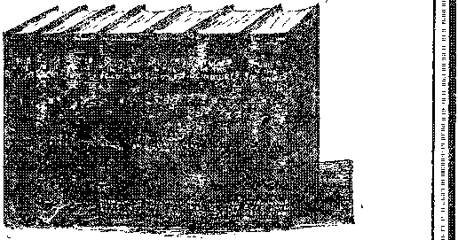

A VISIT TO BERN
SATAN’S METHODS
ANGLOJSRAELITES
AND THEIR IDEAS
INTERROGATING
AN EX-MINISTER
OUR UNCONSCIOUS THIRD OF LIFE
V®1.VIII Bi-Weekly Na 204 July 13, 1927
OLD 'WORLD Dying
Canada.andForeign Countries $ 150
a. Jourmal of fact liope and 'courage
NEV
VORlh
BEGINNING
Wfc==~-"~"; == „^== W
Social and Edvcattonal
'Teachers of I.w Vhged Sacco-Vanzetti Rf.view ....... 646
Here and There Adopt the Wohid
Denmark's School Period ..,...>■•■••••- 648
Is Russia Five Times as Intelligent?
Deplorable Conditions in Washington .......... 648
ITow .Dickson Gained this Victory ............
Finance—Commerce—Transportation
Oil Burners Not Wholly Satisfactory
Steamers "Without Smoke Stacks ............ 649
The Cost of lee Storms ............... 651
Political—Domestic and Foreign
Items on Mexico .................. 617
Those Troops in Nicaragua .............. 647
Effectiveness ot T.iquor Patrol ............. 651
Home and Health
The Vnconscious Timm oi Luk ............. 043
Strange Disease in Spartanburg ............. 648
A New Theory of Life ................ 650
Travel and Miscellany
Planetariums Becoming Popular ............
A Visit to Bf.rx ................... 655
Religion and Philosophy
So Called Scientists Make Vs Tired
What the ANfii.o-IsntnurES Believe ............
Brothers Pack, Robie and Thornton (Obituary) ...... 657
The Enemy’s Methods ................ 658
iNTERBOGATIBfi AN Ex-JIlMSTU ..............
A Good Boy Who Loved the Lord \ni> Was Hated by His Bboihebs 669
Objects of Adoration ................. 670
Little Studies for Little People ............
"When Little Folks Return Thanks (Poem) ........ 671
Published every other Wednesday at 317 Adams Street, Brooklyn, N. Y„ LT. S. A . by WOODWORTH, HUDGINGS & MARTIN
Copartners and Proprietors Address: Hit Adams Street, Brooklyn, N. Y., U.S.A CLAYTON J. WOODWORTH . , . Editor ROBERT J. MARTIN . Business Manages WM. F. HUDGINGS . . Sec’y and Treas.
Five Cents a Coty—$1.00 A Year Make Remittances to TH® GOLDEN AGE, Notice to Subscribers: We do not, as a rule, send a card of acknowledgment for a renewal or for a new subscription, A renewal blank (carrying notice of expiration) will be sent with the journal one month before the subscription expires. Change of address, when requested, may be expected to appear on address label within one month. Foreign Offices : British ..... 34 Craven Terrace, Lancaster Gate, London W. 2 Canadian ......... 38-40 Irwin Avenue, Toronto, Ontario Australasian .»«»*.. 495 Collins Street, Melbourne, Australia South African ...... 6 I.elie Street, Cape Town, South Africa
Entered as second-class matter at Brooklyn, N. Y.. under the Art of March 3. 1879
Volume VIII Brooklyn, N. Y., Wednesday, July 13, 1927 Number 204
MOST persons sixty years of age have spent twenty years of that time in unconsciousness, and it seems proper to give a little attention to what engages so much of our living moments. For most men in middle life eight hours of sleep is a custom if not a necessity. Women require a little more.
A child four years of ago requires twelve hours of sleep per day; an eight-year-old child requires eleven hours; an eleven-year-old child requires ten hours; nervous adults require nine hours, and they should see that they get it. Sleep is nature’s method of recharging the worn-out battery, More sleep is necessary in winter than in summer, because there are greater drains upon the vitality.
If possible, every bedroom should be so situated that it gets at least two hours of sunlight daily. That will kill tuberculosis and other germs. In winter the lower sash of the window farthest avay from the bed should be opened about nine inches, in all weathers. In summer the upper sash should be lowered a foot and the lower sash raised a foot.
To sleep m a bedroom vhich is dirty, or which has dirty bedding, is to speed up the undertaker. Cleanliness is more important there than anywhere else. Actual tests have demonstrated that a person can get as much rest in six hours on a really comfortable bed as in eight hours in one vhich is dish-shaped or for other reasons uncomfortable.
Deprivation of sleep is a cruelty. The Chinese emperors of a century ago, when they wished to be especially cruel to a condemned man, killed him by keeping him awake until he died of fatigue. Sleep is the world’s greatest beautifier. It has the rouges, creams and varnishes beat a thousand miles. If you wish to keep looking beautiful make sure that you get plenty of sleep. Nothing else will make your eyes sparkle as will sleep; nothing else will make your smile so beautiful.
Some foolish women have the idea that loss of sleep will make them thin, but the fact is that plenty of sleep is the best preserver and restorer of the youthful form. Many women, and men too, have become prematurely old because they did not get enough sleep.
OBSERVING that every moment is so crowded nowadays, many persons are experimenting to see with how little sleep they can get along. Mr. Edison takes a short nap in the middle of the day, another late in the afternoon, another in the evening, and retires for the night about midnight. A five-minute nap immediately after the noon meal is exceedingly beneficial to the writer. Some people seem not to be benefited by short naps.
Occasionally there is a person who professes to have no desire for sleep. In 1923 a man died in New York City who claimed that he had not slept for forty-four years. He died at the age of eighty-two, and was blind at the time of his death. A man in Buffalo, and a rancher near Seattle, each claims to be able to get along without sleep. But our Lord Jesus slept, and slept soundly, in the midst of a great storm on the water, when all on board were in terror.
Almost any person can require of himself a reduced amount of sleep, but it is calculated that it requires fifteen days for the average human body to recover fully from the loss of two consecutive nights of slumber. It is believed that the clouding of the minds of Sir Walter Scott and Ralph Waldo Emerson in the last years of’ their lives was due to their persistent loss of sleep. In numerous instances too much loss of sleep has resulted in imbecility or lunacy.
The night life of the large cities is a species of insanity. The idea that it is more amusing or more romantic to do late at night what could just as well be done at an earlier hour is absurd. There ax« people who have to work at night, but there would be fewer of them if more people would go to bed at a decent hour. They would not need so much service.
The only representative of intelligent life which does not sleep is said to be the ant. It works at top speed for twelve hours, then takes a brief rest, without sleep, and is ready for another twelve hours. There is a great deal of information hack of the proverb addressed to sluggards, “Go to the ant, thou sluggard: consider her ways and be wise.” ’
HE professors are studying everything nowadays, and are making extensive experiments with young men to see wdiat changes take place in their systems when they are deprived of sleep for an undue length of time. They have learned that after a time the blood of the student shows changes that correspond to those in a drunken man. The red corpuscles decrease in number, while the white corpuscles become more numerous.
Hearty eaters require more sleep than light eaters, because the hearty ones use up so much more vitality in the digestion of their food. It is found that blood pressure decreases with lack of sleep, but it is also true that blood pressure decreases with lessened food. Most people eat too much.
An ingenious physician has invented a sleep recorder. A person asleep produces certain vibrations of the bed, but they are rhythmical and can be identified as such; if awake, these vibrations are different and more pronounced—• this is the basic principle of the invention. It is so arranged thai the awakening of a patient may automatically call a nurse.
Many sleep postures are recommended. Our own recipe is to lie first on the left side until that is fairly well rested, then lie fiat on the back with amis and legs stisight down, and not touching each other, until the back is rested, and then turn on the right side, away from the heart, and go to sleep.
A good sleep posture is to rest the body on the right side of the chest and abdomen. The right arm is straight down, either behind the body, or in a diagonal position in front. The head and neck are supported by the right cheek on a small pillow. The right leg is straight down. The left arm and left leg are so bent as to constitute braces for the body.
After the body is turned into this final position for the night the breathing should be adjusted to that of the condition of sleep, and all thought except that of the deep breathing should be excluded from the mind. After a time, if sleep fails to come, the left side and back can be rested again as before.
The rest which comes from lying on the back with both arms and both legs straight down, and not touching each other, is so complete that one may lie all night in that position without losing consciousness and yet be fit as a fiddle the next day.
Some people find it exceedingly restful to sleep on the stomach, with arms extended, but that position interferes with the circulation and is said to be a cause of heart trouble.
TF ONE is troubled with insomnia, nothing is -®- so beneficial as a good treatment by a first-class osteopath. A good substitute is to have a good wife beat a tattoo up and down on each side of your backbone with the soft side of her little fists. It will give her a chance to square some of her accounts with you, and do you good besides. If-. u feel more heroic you can lie down on the floor on a pillow and let her walk up and down on your back, on her bare heels. Try this and you will see that it is not a joke but a good common sense remedy for insomnia.
Another good remedy is to mildly massage the intestines, beginning at the lower right side of the body, where the small intestine empties into the larger, and then with both hands follow its course up to the ribs, across to the left side and down. Good results are bound to follow.
Other things that take the blood away from, the head are helpful. Some are benefited by soaking the feet in hot water, or by taking hot baths just long enough to get the blood to the surface of the body; others by dashing cold water on the feet and jumping into bed without-drying them. This is all right for the robust
Mechanical means for inducing sleep, such as fanning, counting sheep, rocking, listening to some monotonous noise, etc., might be of benefit to some peoplq, but to others such things are maddening and exasperating and are sleep destroyers rather than sleep bringers.
If one is chilly and unable to sleep on that account it is a good idea to hop out of bed, strip, go through some vigorous physical exercises while the window remains open, then put another cover on the bed, hop hack in and in a few minutes you will be wandering in the land, of Nod. A whole-hearted consecration to the will of God is of priceless benefit in this matter of getting enough sleep. It does away with worry.
Concerning the postures of animals in sleep a writer says:
Every kind of animal, includirg man, seems to have adopted a particular po-ture in vhich to sleep. The ordinary man sleeps on either his right or his left side, with his knees drawn up. When, howexer, ho has endured extreme fatigue or prolonged pain a man may sleep in all sorts of positions. Men have been observed to sleep when standing or walking, vhen swimming the Channel, driving a hon-e, or even when bound to the stake. Some animals, too, are able to sleep while standing. A dog, especially when old, may do m occasionally; a horse often does, while an elephant never lies down to sleep. Long-legged birds, such as storks and gulls, have been observed to sleep balanced on one leg. Most birds, however, sleep with their heath turned round over their backs. Often their beaks are hidden among the feathem between the wing and the body.
But there are some curious exceptions to this rule. The owl sleeps while sitting on a branch; while some Indian parrots and bats sleep only when suspended from a tree. A duck is the most unconventional of all. This bird sleeps on the open water, and during its slumber paddles itself with one foot in circles to avoid drifting to the shore. E\eu such a bulky animal as the sloth sleeps upside down, hanging by its four feet and with its head tucked between the forelegs. The posture adopted by the domestic cat is typical of main other animals. Foxes and wolves sleep curled up, with their noses and the soles of their feet all close together and often covered by their tails. Some animals sleep with their eves open, others with them clo.-ed. Nearly all fish belong to the former class, as do also hares and snakes. Salomon and goldfish are said never to sleep at all.
DER this head may be included the Rhode-sienese and South American forms of
sleeping sickness. These diseases are known to be caused by certain germs. Though called sleeping sickness the patient does not sleep, but is too weak to take an interest in what goes on. about him. '
The heart of 'Africa is being eaten out by sleeping sickness. The disease prevails over an area of one million square miles. Two hundred thousand died of this disease along the Upper Nile in one year, and ninety thousand persons in one year in the vicinity of Victoria Nyanza.
The whites were responsible for spreading this disease. As they opened up one territory after another they employed porters, slightly a ffected with the disease, xvho carried the germs all over the country. The disease affects cattle, horses and dogs; but pigs are immune.
The disease is of slow development. The tsetse fly itself, which causes the disease, lives a year and may infect many persons. The first symptom of the disease, a severe headache, occurs a month after infection. This headache recurs at intervals for as much as six or seven years, sometimes, before the parasite reaches the membrane surrounding the spinal column, when the real sickness begins.
At first the sleep is a light one, in which a man may walk around, but it finally progresses to a stage where he lies helpless all day. The German chemists have found a cure for this form of sleeping sickness. It is called Bayer 205. because 205 transformations of the original substance, atoxyl, were made by the chemists before they achieved success. The French also claim to have discovered a cure for the African form of sleeping sickness.
THERE are various kinds of sleeping sickness other than those mentioned. There is a mental paralysis which has accompanied infantile and other forms of paralysis, another form that has accompanied the influenza, and another form that has attacked wounded soldiers awaiting operations. Tn the latter case, caused by intense nervous fatigue, operations have been performed without the soldiers’ awakening until, long afterwards.
In 1712 there was an epidemic of sleeping sickness in Germany. In 1890 there was- an outbreak of it on the borderland between Italy and Austria, where it raged for two years. In 1916 there xvas another outbreak near Vienna, which has not yet quieted down, but on the contrary has spread to an alarming degree over the western -world. It has been supposedly traced to cold sores in men, and to throat and tonsil affections by those who get fees for removing tonsils, but its origin is still unknown.
In 1919 a soldier, a young man of twenty-six, crawled under a bungalow to take a nap. When he went to sleep he weighed 186 pounds. At the end of fifty-one days he awoke and found that in his sleep he had lost 101 pounds. No one knew’ where he was and in the meantime he had been listed as a deserter.
The mortality from this dread disease, Encephalitis Lethargies, is high, running to 48% of the cases. Recoveries come unexpectedly. Lovers of violin music have been awakened by the tones of the instrument they love. Mothers have been awakened by the calls of their children.
England is much alarmed over the steady spread of this terrible disease. The eases in that country now run into the hundreds. The after effects in those who recover are horrible. Some lose their speech, some their sight, and sonic their morals. Old habits, hobbies, customs, desires and ambitions are so completely changed that the person awakening seems i »t the same peison.
MIND that dreams is like a factory that keeps on running after the orders are filled, the lights are out and the boss has gone home. The output of the factory is very irregular.
A doctor, experimenting with one of his female patients, gave her some kind of dope which caused her to dream of traveling extensively. Wherever she went the ears and stations were all clean and freshly painted, and the trainmen were always in new uniforms, trimmed with gold braid. The doctor changed the dope and the woman’s dreams became horrible, filled with violent quarrels. The regular dope addicts take their opium, hashish, alcohol or cocaine because of the color rvhich it gives to their dreams.
Physical discomforts are the cause of some dreams. If the covers slip off one may dream of wandering about unclothed. If the nose becomes stopped one may imagine himself running after a car until he is out of breath. If hungry one may dream of food, etc. Indigestion may cause other dreams.
The healthiest people do not dream at ail. Irritations of eye, ear, heart, lungs, >t<>niach, kidneys, intc stiues or other organs are liable to manifest themselves in dreams. Nervous people are more susceptible than the moie stobd. Doctors claim that many people die of l‘i ight caused by evil dreams.
A Bristol mechanic dreamed that it was raining shot and thus discovered the soem-t of ;uL ing bullets by pouring molten lead from a height. A Mr. S. II. Crockett once received paynunt for a story cvritten and mailed in his sleep. A farmer in South Dakota, dreaming that he u as enjoying a SAvim in a nearby bathing pool, dived out of his bed and was badly bruised.
In Bible times the Lord made use of dreams to convey His purposes to some, hut those times have passed. No one should pay any attention to dreams or visions now. They are certainly not to be considered as from the Lord. Qw’te often, when not traceable to natural causes, they may he, and no doubt are, caused by the demons’ toying with our thinking faculties while we a>e resting. At any rate, they should be completely ignored.
HEADED by fifteen of the Columbia University Law School faculty, members of the lav’ faculties of twelve leading American universities petitioned Governor Fuller of Massachusetts to appoint a commission of inquiry into the Sacco-Vanzetti case to determine whether the judicial institutions had done justice in this case. The Governor did not act upon the suggestion but announced that he would review the case himself. It is admitted that none of the stolen payroll money was ever traced to these -jtwo Italian radicals. Jt is admitted that their identifications as the criminals were imperfect, that their alibis were unshattered and convincing, that Federal agents acknowledged that they were trying to get rid of them, and that another man duly confessed that he committed the crime for which these two men were sentenced to be electrocuted in the week of July tenth. Twenty-one members of the British House of Parliament have requested that these men be released, but it is probable, as this issue goes to press, that these men must die.
[Radiocast from Station WBBR ou a wave length of 416.4 meters by the Editor.]
IS THE United States so unpopular that it is afraid to submit to arbitration the dispute of its oil magnates with the Government of Mexico over the meaning of the one word “retroactive"? That, in effect, is the query of the National Woman’s Trade Union League. It is urging, too, that the United States shall not lift the embargo on arms and thus encourage the revolutionary outbreaks which once made Mexico an inferno, and for which the United States was largely to blame. The Boman Catholic Church wants the United States and Mexico to go to war. So do the oil men. Let us hope that this combination of the unholy trinity, big church, big business and big politicians, does not succeed in forcing war with a weaker neighbor that is trying to use its spare funds in educating its people to be better citizens. If there is to be a war with Mexico then for once let all the unholy trinity, every last man of them, be put into the front line trenches. In this way they might learn something.
HpIIE Boston Hei aid puts a lot of common sense into a few words when it says: “There is little or no enthusiasm in this country for a break with Mexico. Oil is not a very popular rallying cry. We want our just interests protected, and we also want to keep the peace.” If the oil men are really determined to have war they must expect to put up a good many millions of dollars, and it might 'be cheaper for them to try obeying the Mexican laws.
WHAT would happen in the United Slates if the plotters now scheming for war with Mexico should succeed in their plans is thus set forth by the Milwaukee Leadei;
The hunah mob vould go ciazj. as uuial. The big press would stn up the mob against anybody who kept his head and vbo vould tell the iiuth about it. U. S. marshals and setiet us wee men vould hunt all objectors to war or eonsciiption. Judges and juries vould try to send the sane people to the penitentiary, to keep them locked up until. the powers ghe the signal that “'now it can be told”. And most sane people would be lucky if they ewaped with their liv es from the crazy mobs that the war patriots stir up.
Dr. O. E. Goddard, Mission Secretary of the
Methodist Episcopal Church South, has just returned to his headquarters at Nashville, Tenn., from Mexico. He states that President Calles has i-ecently established nine agricultural colleges, where he is trying to teach the small farmers to conduct their own farms and become economically independent; has established many common schools; and in general is developing an economic and educational program fo* the benefit of the common people. Doctor Goddard adds: “If the kind of administration President Calles is trying to enforce could last for fifteen years we would have a new Mexico.” In the face of testimony of this kind, how silly appear all the accusations that Mexico has gone Bolshevik; and how inexcusable seems the effort to force a war for any reli gio -political or oleaginous combination seeking to unhorse such a man.
fTUTE attempt to start a religious war in Mex-ieo turned out to be a farce. A few expriests and a few misguided and ambitious soldiers started out to fight the Mexican Government under the banner, “Vive Christ the King.” They burned two bridges, but that was as far as they got. The Mexican Government put down the insurrection without difficulty. Fine chance now for another big martyr story.
THE German correspondent of The New York J- Times states that the role of the United States Government in the Presidential controversy in Nicaragua has caused more discussion in Europe than any action taken by the United States since the rejection of the Treaty of Versailles. He sees Europe’s Prime Ministers chuckling because this act of the United States puts this government on record in such a fashion as to compel her silence when European powers do the same thing wherever they see fit to do so.
TWO blacksmiths of South Aniboy, N. J. are reported to have bought an old safe for $2.
They opened it and found themselves the possessors of about $75,000 worth of jewels, stocks, bonds and money. The safe had been kicking around in the cellar of an old farmhouse for nobody knows how long. The fanner cleaned ' his cellar and made $2 by getting rid of the old safe, but he had to take it to town to get his $2. Nobody claims the contents, so the blacksmiths are in luck, but it looks as if they ought to give the farmer another 50c.
THE American college population is set at 750,000, which is one out of every eight, young people ip, the country between the ages of 18 and 21. It is believed that this percentage will be increased until one out of five will be college students. In the British Isles and in France only about one young person out of thirty-five can afford to attend college.
THE average school period in the United States is 168 days, but in Denmark it is 246 days, so the United States Bureau of Education tells ns. From the standpoint of true patriotism the exploitation of child labor and the neglect of child education are the worst of social crimes.
WHY is it that in Russia nearly five times as many books are sold each year as in the United States? These are the figures given in the AVvr Republic. One reason is that America smokos too much: it has 500,060 tobacco dealers and only 2,500 book stores. Another reason is that it is thinking too much of its stomach and not enough of its head. The average American spends $18J 5 annually for candy, ice cream and soda, and only $ld0 for books.
ONE reason why Soviet rule is so dreaded by Teapot Dome statesmen is because of the uncanny way the Soviets have of condemning to dt ath those who engage in bribery at the expense of public interests. Three prominent men have just been sentenced to death for bribery by a Moscow judge. By all means let us keep, this judge from our shores.
John S. Kennedy, President of the New York State Commission of Prisons, in his annual report for 1926 says in part:
The penal institutions of New York City, with the exception of those at New Hampton and Greycourt, are a disgrace to the fair name of this city. Men and boys, first offenders and recidivists, mentally normal and feeble-minded, sane and insane, deserters inebriates, pilferers, thieves, bandits, yeggmen, drug habitues, thugs, moral degenerates, sex perverts and a host of others, native and foreign born, are all dumped together into insanitary cells and dormitories, doubled up in, cells, the bad v ith the hopeful, two-thirds without any employment, no educational facilities—simply time servers until they go out, many norse than when they came in. If there arc any places in New York that can merit the designation of school for crime and vice it is the penitentiary and allied institutions on the island. From 1,000 to 5,000 men and boys are in these w retched places the year around.
SPARTANBURG, South Carolina, a city where no religious books may be sold without the consent of the local clergy, is suffering from a peculiar form of denionism. Children stricken with the disease are subjected to sudden experiences called “running fits”. They jump madly to their feet and run wildly until they fall exhausted. They are unable to see where they are going. Medical treatment produces no results, and could produce no results if this is the work of demons, as we believe to lr* the case.
THE theory has been advanced dial ti d reason why so many locomotive engineers break down at an early age is H-muse, while they were working as firemen, the. (tiired the habit of eating tremendous meals, and after being promoted to the easier job continued the same habit of eating. This may well be true. Most people dig their graves with their teeth, and seem to enjoy the process.
Representative Tinkham of Massachusetts has called attention to the fact that London, with a population of 8,000,000, had 28 murders in 1922, -while in the same year Washington, with one-sixteenth of London’s population, had 38 murders. So much for London. In Paris, with a population of 3,000,000, there were 16,000 arrests for drunkenness in 1923, 'while in prohibition Washington, with one-sixth of Paris’ population, the arrests were 8,000. Mr. Tinkham charges these conditions in America to the interference of churches in polities.
THERE are multitudes of reasons for Chicago, but one of them is that it is one of the cheapest places to make brick. Chicago clays can be fired in 19 hours; in Cleveland it takes 48 hours. Chicago clays are so easily worked that a brick machine will produce 300,000 per day, while the same machine using Cleveland clay ivill produce but 70,000 per day. Chicago is the largest brick-producing center in the world, pays the highest wage scale and has the lowest price on brick. The Chicago delivered price is $12 per thousand.
TAISGUSTED because of the frequent inter--*-7 ruptions in their sources of supply many users of anthracite have in late years turned to oil burners, and now some of them wish they had not done so. Power burners are alternately noisy and silent; gravity burners are heavy oil eaters; back drafts often cause oily soot to float out of the chimney and down on the windows; frequently the interior of the house has the smell and feel of oil all the way from cellar to garret. In some instances purchasers of oil-burning equipment have taken it out and replaced it with anthracite, bituminous or coke burners. In some instances they have not had to take it out, for it has exploded and blown itself to pieces.
PROM the time they first appeared on the seas the funnels of steamships have been their distinguishing feature, but it seems now that they are liable to disappear altogether. The fumes from Diesel engines can just as well be ejected from the stern of the vessel. In the largest motor ship, the “Asturias”, there are two funnels, but only one of them is used for gas fumes. The other is rigged up for looks, and houses electrical apparatus.
Promenades on Terraced Buildings rpETE terraced building is quite a new thing* but it was forced upon builders, because the tall modern buildings were converting the streets into canyons and almost shutting out the light of day. Now they are putting promenades or sidewalks around the terraces, which make a fine place for employes to walk during lunch hour and get a little sunlight and air without incurring the risk of being run over by a truck. And the air is better, too.
SIX large factories in the United States are engaged in the manufacture of toothpicks.
They are made of white birch; the logs being shaved into ribbons as wide as a toothpick is long, and afterwards chopped the required width, then tumbled to make them smooth. After being thoroughly dried in an oven they are straightened out by shaking, and packed for shipment.
HTIhomson’s great fish, captured off Miami several years ago, is still being exhibited in various parts of the country. Last winter it was at Knoxville. Tenn. The fish, which is forty-five feet long and twenty-four feet in circumference, is the largest ever seen. It could easily swallow a man and still have plenty of room to spare. Caught sixty miles off shore, it was harpooned five times, shot 151 times, and was killed only after a desperate battle which lasted thirty-nine hours and during which time Captain Thomson’s boat was pulled hundreds of miles. The weight of the fish was 30,000 pounds; and in order to euro or preserve it, all the formaldehyde obtainable in the State of Florida wTas put into requisition. Since this fish was discovered those scientists who habitually make so many sarcastic references to our Lord’s account of Jonah and the great fish have not had so much to say about no fish being able to sAvallow a man. • It is high time that they kept still about the one Book they knovT nothing whatever about.
THE New York Evening Journal tells ua that scientists have pointed out that it is impossible, according to the Bible itself, for Adam and Eve to have become the ancestors of all other Human beings, because Adam and Eve had only two sons and no daughters. The Journal stands by the Bible, and calls attention to the fact that God could have created other Eves as He did the first one. Good for the ‘Jo?/? nal, so far. But it should have gone farther and pointed to the fifth chapter of Genesis, verses 3,4, where it mentions a third son of ‘Adam by name, and states additionally that he had other "sons and daughters’’. The Bible does not say how many sons and how many daughters there were, but as Adam lived nine hundred and thirty years the chances are that there were a good many. All of Adam’s sons who married took as their life partners Adam’s daughters. There was no other w’ay, and at that time humanity’s blood stream was sufficiently pure so that it could safely be done. It is about time that the make-believe scientists who have read every other book but the Bible should give humanity a rest. They are making many people exceedingly tired.
TWELVE archaeological expeditions are now vigorously engaged in digging over the soil of Palestine, searching for relics which throve light upon the history of man. Hardly a month goes by that does not reveal something which confirms the simple truths set down in the Bible. Not a thing has ever been found to discredit the Bible. The work of these leal scientists fills us with admiration. They are worthy of all honor.
ACTUALLY a planetarium is a dome of fine wire meshing into which concrete is thinly blown and allowed to set. On the interior there is nothing to remove the optical illusion that one is looking at the actual sky. The lantern of the planetarium is a very complicated thing, with over 100 projection lenses having star maps behind them. The lenses are mounted on a ball, and as the ball revolves the Mars in the heavens apparently go through all their movements and at any pace desired. It is said that with a planetarium one can leain more about the stars in a few minutes than he could get from books in hours. Seven German cities now have planetariums, Copenhagen has ordered one, and New York has one in process of construction. Soon they will be everywhere, and will accomplish great good in causing humanity to think about the Creator who has made all these wonderful things for man’s everlasting enjoyment, entertainment and profit.
fTTHE Bible tells us simply that life is the gift J- of God, and we accept the statement as absolutely correct. Scientists have generally contented themselves with the remark that life is inexplicable: but a new theory has just been advanced that the so-called Millikan or cosmic rays, which are of unidentified origin but are believed to come from the sun and other stars, furnish the energy of the living cells. It may be that this is correct and that the Millikan rays are emanations of divine power, the “sweet influences of the Pleiades’’ of which God spoke to the Prophet Job. But in any event life necessarily traces back to the original and only LifeGiver, Almighty God.
A CLIPPING from a Palestine, Texas, paper tells us that the first fig orchard in Brazoria county, Texas, was planted in March, 1924. In 1925 those orchards produced an average of $80 net income per acre, and in that year a preserving plant shipped seven carloads of figs. Last year the net income per acre was $100 and twenty carloads of the preserved fruit were shipped.
REPORTS from central California indicate the presence there of armies of mice numbering millions vhich have overrun considerable portions of the country, destroying nearly everything in their path. Poisoned grain and a fortunate return of colder weather last May have materially mitigated the nuisance.
NJENT summer anybody who lias a few dol-J lars to spare can vii-if. Hudson Bay without any trouble. He will go to Winnipeg and thence via the Canadian National Railway. The route from Winnipeg is around the west and north sides of Lake Winnipeg. It is 800 miles from Winnipeg to Hudson Bay, and when winter set in more than 700 miles of the track had been laid. By this route the Canadians will save over 1,000 miles in hauling their grain to England.
ONE of the costliest entertainments in the
United States is the iee storm, by reason of which a single telephone or telegraph wire may become as much as three inches in diameter. A single storm has caused an outlay of as much as $7,500,000 for repairs. Tn an iee storm in November, 1921, the city of Worcester, Mass., lost eight thousand shade trees, while in an ice storm in Michigan in February, 1922, hundreds of thousands of fruit trees were destroyed.
THAT the liquor patrol off the coast of the
United States is really effective is confirmed by complaints of Scotch distillers that the consumption of Scotch whiskey, both at home and abroad, is half what it was in 1913, and that the exports to "unspecified countries”, by which is meant the bootleg trade with the United States, has dropped sixty-live percent in two years.
rPHE rules of the British court foibid the presentation at court of any woman who has had her hair bobbed, unless she wears a switch or is otherwise clever enough to cover up the fact that her curls are missing. There are no exceptions to this rule, oven though there are two queens in Europe, those of Belgium and Roumania, who have bobbed heads.
THE British Broadcasting Company, which was created for the purpose of passing out of existence, has now given its last gasp; and all broadcasting in the British Isles will henceforth be done by the British Government A particular object in view in this connection is admitted to be to prevent the broadcasting of controversial religious and political subjects. In other words, the British Government intends to continue to do all the thinking for the British people.
DAY by day the wonders of radio increase.
A few weeks ago regular telephone service was opened between New York and London. All you need are $75 and a friend in London who is willing to listen to you for three minutes, and you can have a conversation yourself. The latest is conversation between Ottawa and Lon-, don, and Detroit and Paris. The results were perfectly satisfactory. Part of the circuit is over long distance telephone.
AS EVERYBODY can listen in, there is no secrecy connected with telephone conversations between America and England. One New York man talked to his lady friend in London; and he must think considerable of her; for the talk cost him $750 for a thirty-minute chat. Another New York man addressed two hundred of his salesmen, gathered in London for the purpose. Buffalo, Rochester and Syracuse have each used the service successfully. Most of the talks are for business reasons and several important deals have been closed. One listener in northern Ireland claims that he hears all conversations on a radio set that cost him. $2. He uses a kite, with 2.500 feet of steel piano wire attached, as an aerial.
THE radio experts tell us that if all the people in the world shouted into a common mouthpiece their combined shout would be about equal in volume to the amplified radio wave that carries the human voice across the Atlantic in the regular telephone service maintained between New York and London. It is stated that less than one quadrillionth of the original energy flashed across the ocean is finally picked, np on the other side.
ONE day in December a traffic tie-up in the heart of London, stretching from Piccadilly Circus to Oxford Circus, held the main business thoroughfare of the city securely locked for seventeen minutes. Imagine what would happen if a great fire should break out in a city thus traffic-bound. Something of the kind actually did happen in Salt Lake City, where fire apparatus was hindered fifteen minutes by the string of motor vehicles in the way.
FASCISM has formally taken over the schools and colleges of Italy. Nothing may b® taught in any of these institutions which shows
'disrespect for the Fascist state. Another decree empowers the government to dismiss any administrative magistrate whose official or personal activities or opinions are out of line with Fascist doctrines and practices.
"RJ’OHAMMEDANS in Persia still practise XVI. torture of Christians, according to evidence presented in a deportation ease in New York recently. An Armenian was brought into court, exhibiting burns about the legs inflicted with hot iron rods, the object being to prevent him from kneeling in prayer. The magistrate under the law had no recourse except to order the man deported, because he had come in across the border without papers; but the court publicly appealed to the Secretary of Labor to overrule the court’s decision and let him stay here anyway, rather than fall into the clutches of the demons in human form who are still living back in the days of the Inquisition.
POSSIBLY some may be mildly amused by the following excerpt from a pamphlet entitled, “The Messenger of Our Lady of Sox*-rows,” Vol. XIV, No. 2, page 71, bearing date of July, 1925, and purporting to instruct us in the underlying reason for Andrew Jackson’s memorable victory at New Orleans, a victory heretofore erroneously accredited, as it would seem from this, to the straight shooting of backwoodsmen with their Deckard rifles.
Alas, what monstrous ingratitude we benighted heretics have manifested, albeit innocently, toward the unseen Lady who so benig-nantly safeguarded our national liberties on that occasion! Quite unaware were these recipients of her favor, the profane borderers, that it was “Our Lady of Infinite Compassion” who steered each swiftly-speeding pellet of lead into the lungs or gizzard of a red-coated invader, like Athena in the Iliad, turning the enemies’ projectiles aside, to spend themselves harmlessly in the levees! But we will quote the article verbatim :
After a time war came to contribute its quota of anxieties. There was a January night in 1815 that found the nuns praying before the Blessed Sacrament; while not far away, at Chalmette, the Americans, under the redoubtable Andrew Jackson, and the British, under the equally redoubtable Pakenham, faced one another in battle. The Ursulines’ prayer was heard and what seemed impossible came io pass. [Italics ours.] The Americans won the day, and Pakenham was carried ofi to die. The victory was ascribed by the religious to Our Lady of Prompt Succor [Kindly do not mistake that word.]-—but that is a story by itself. After the High Mass of Thanksgiving at the cathedral, the hero of Chalmette called at. the convent to thank its Inmates for their prayers; and when in later years ho came back to New Orleans, he did not forget to visit them.
And lie bestowed substantial tokens of his appreciation, we presume, on Our Lady’s shrine. The victory was ascribed by the irreligious, we infer, to other causes, since the story of Our Lady’s prompt succor has been hitherto withheld from the general public. Probably the British attributed their defeat to the poor generalship of their leader. The patriotic American view, in the light of these revelations, appears to have been unwarranted vanity.
Maybe future historians will make due amends for past neglect, by including in the text grateful acknowledgement of our national indebtedness to Our Lady’s succor. Maybe military aeronauts in our next, great war will address fervent prayers to her when they release the gas bombs, just as mediaeval archers shouted, “Saint George for Merrie England,” while they loosed their arrows.
I fear yourselves may have sometimes been guilty of inexactness in referring to the church of Rome as a “papa system”, overlooking the equally conspicuous “mamma” feature. In evidence thereof I quote from another Catholic publication, “Tabernacle and Purgatory,” Vol. 21, No. 3, July, ’25, page 80. Discussing St. Gabriel’s promotion of foreign missions, it says, “One of his confreres asked him one day if he would not like to go to the heathen missions. Gabriel answered: ‘With joy, if it is the will of God? Then he added with a sigh: ‘Oh, that I could show these poor creatures my Heavenly Mamma!’ “ [Italics ours.] Perhaps the trinity is conceived as consisting of Papa, Mamma and Bad Boy.
WE HAVE just glanced over sonic of the recent literature of the Anglo-Israelifes, and list some of the items that some of them believe. All of these things look like nonsense, sacrilege or blasphemy to us, hut they see.ni reasonable enough to those who are thoroughly inoculated with idolatry of the British Empire. We present the matter merely as news, and. as showing what some people can believe about the most, rapacious, most diabolical, most hypocritical, diplomatic government now left standing on the earth. -
Among the believers of this theory Meir or are Queen Victoria ; Fdwnrd VII; Admiral Lord Beresford; Admiral Lord Fisher; Field-Marshal Earl Roberts; Rt. lion. W. F. Massey, Prime Minister of New’ Zealand; Henry Ford, and thousands of other notables.
We do not attempt an orderly presentation, because to ns an orderly presentation of a dis-, orderly and absuid theory is a waste of time. We state, as nearly as we can understand them, some of the hundreds of claims put forth by adherents of this theory:
1. The Anglo-Saxon peoples are, in a large measure, the direct descendants of the apostate ten tribes of Israel. So much the worse for them in some respects!
2. There was a tribe of Dan, therefore we can trace the wanderings of that tribe in the following names: Don, Daimbo, Denmark, Damme Alps. London, .Dardanelles and Scandinavia. True, the other nine tribes may not he thus ‘‘identified-’, hut— what's the difference? Perhaps they didn’t do so much wmdering.
3. The name Saxon with an "1’' in fr< nt of it becomes Isaacson. (This proves a lot if you want Io make somebody think you are related in some way to Abraham!)
4. The Britidi nation somehow was established at the date of the Exodus and will last for ever.
5. Joseph! The tribe of Joseph became the Getae, the Goths, the Normans, and finally became ruler over the Angles, or Anglo-Saxons.
fi. Ephraim! Ephwami was to he a nation and a company of nations; so. of <x w so, that means Groat Britain and her self governing colonies.
7. Manasseh! Manasseh was to he a great people, a second fiddle to Ephraim, so to speak; so, of course, that means the United States, which, for the purposes of this theory, is still a sort of colony of Great Britain.
8. The House of David was impelled to 11 <?_ land by Jeremiah in the person of Tamar Tephi, the daughter of Zedekiah. While there Tamar married a king of Ireland named Eochiad Here-mon, and thence they have a complete list of the line of kings of Tieland, leading through to the Scottish kings, thence to the English kings when James VI of Scotland became James I of England, and of course from thence to the present day; and. now’ there is only one true Israel, and that is Great Britain and Ireland. (God help the real Jews!)
9. The present Prince of Wales is just exactly Hie 1.00th prince in direct succession from King David, and his name happens to be David, too. (’mild anything be more convincing?
10. There is nothing in the word Gog that sounds very much like Russia, hut still it must be Russia because in connection with Gog there is mention made of -
11. Roseh! That is Russia. Sounds like it, especially if wu can imagine the Russian partly tanked up with vodka.
12. Meshech! Well, that is Moscow’. There are an M and an S and a C in each word, and that, proves it! -
13 Tubal! That is Tobolsk. There happens to be a little town far up in Siberia by that name and, except for the whiskers on the back end of iho word, they are about the same; so that proves fliof.
14. GomeiJ There are a G, an M. an E and an R in Gower, and there are a G, and E, an R and an M in Germain ; and so, of course, Gomer imam (h-nnany.
13. Tin re are the four attributes of God, justice, pew i, wisdom and love. These are rep-re^ented fiv the bon, ox, eagle and man. The lam is the reil'di lion, shown in one way or another ten turn - <m thn British coat of aims.
lf>. The ox! Now. don t laugh. That is John Did?. Ibto!
17. The oatth ! Modesty almost lorbids our montioiiinu’ in !>u< that is the credo shown on all \moricari coin;-.
18. The man! th! We ferel like Lindbergh W’hen they pinned the cross of the .Legion of Honor on his chest and kissed him on both cheeks. The man ! That’s us. That s I ncle Sam. And our kiss? What about that? Oh,, we got that Judas kiss in the spring of 1917. It wmS Britain that got us into the World War.
19. The unicorn of Ephraim? That is the identical unicorn shown on the British seal.
20. Young lions are mentioned hi-Bible prophecy. Well, those are the United States and Scandinavia. We don’t know why it is so; but it is so, anyway.
21. The original symbol of the Christian Church (of the House of Dagon) was a fish. That is why the fish is shown on the Union Jack. Poor fish!
22. The British flag is the banner of the King of kings. See the cross on it. (What a blasphemy!)
23. David's throne is the English throne. (Another horrible blasphemy.)
24. Christ vill literally* reign over the eaith seated, in a body of flesh, on the British throne. (Can you beat it?)
23. The Coronation Stone upon which every British King is crowned is the same identical one on which King David sat when he was crowned. There couldn’t he any mistake about this.
26. “The strong man armed who keepeth his house” is the great war power, Great Britain.
27. “The Isles shall wait for his law.” What isles? British Isles, of course.
28. “Declare it in the Isles afar off.” What isles? Ditto.
29. The missing “H” in shibboleth is the reason why the Cockneys drop their H’s. Honest! Don’t smile! See the Bible, Judges 12:6, and be convinced.
30. Why were there thirteen tribes of Israel ? The answer is that there were thirteen colonies in the original United States.
31. But wait; here’s another thirteen. President Wilson v as reelected in 1916 by the thirteen votes of California. Almost forgot that was in the Bible.
32. It was on Good Friday that President Wilson declared war on Germany. That proves that God loves the ton lost tribes’ And yet, Germany, or part of it, was one of those tribes. But, oh well—
33. The Great Pyramid shows the precise day that Britain entered the World War!
34. ‘The hour, the day, the month and the year.’ That is 11 A. M. on the 11th day of the 11th month, 1918, when Britain got out of her tightest corner and the Armistice was declared. Of course the day is missing in the Sinaitic text and the year is missing in the explanation, but what are a few broken cogs between true Britishers I
35. The British Government is ‘the stone cut out of the mountain without hands’which breaks in pieces her enemies, Russia, Germany, China, Persia, and the whole Mohammedan world in Asia and Africa.
36. The “stone” kingdom smote the military image in 1914-1918. (And there has been no evidence of militarism on earth since!)
37. General Allenby took Jerusalem on Christmas Day. Another proof that God loves the greatest disturber of the world’s peace ever on earth.
38. The drying’ up of the Euphrates means the drying up of the Turkish Empire by Britain.
39. The Court of St. James is the Court of St. Jacob, if you tianslate it into Hebrew, hicli shows again that somehow or other the 11 itish Government is related to Abraham.
40. When Jacob crossed his haud“ in blcv.-ing Ephraim and Manasseh that proves tluw both Ephraim (Britain) and Manasseh (United States) are true (,’liristiam—if it does. Does it? Who says it does ? It proves somethin(j, anyw ay.
41. “The drunkards of Ephraim.” (Isaiah 28: 1) That refers to those who are over fond of British beer and Scotch and Irish whiskey. Why not ?
42. Israel was to be superabundantly blessed with gold, silver, oil, etc. That is why the groat financiers of “Ephraim" awl “Manasseh” are grabbing everything in sialit in every corner of the earth.
43. “Thy seed sliall possess the gate of his enemies.” That explains why Britain has Gibraltar, Malta, Aden, Singapore and a hundicd other gates controlling the world’s commerce; and why Uncle Sam has Panama, Hawaii, etc,
44. Israel must not take usury from brethren. That is why Uncle Sam should let Britain have money at a low rate.
45. Israel was to lend and not borrow. That is why Britain and the Fnited States base the whole world by the throat, as money lenders.
46. Israel was to "push the people together to the ends of the earth". That is why Britain and the United States are cruel and imperialistic. (Not sc bad. If all the arguments weiv as good as this one we would he stumped. But then, if Britain is Christ’s kingdom—oh well, we give it up.)
47. Israel was to spread to the North (Canada), and to the South (Australia and South Africa), to the East (India) and to the West (the United States). That’s that.
48. After a little bit there will be another ' World War, in which Europe in general will line up under a supreme ruler, the Antichrist; and then the two pious and godly nations will unite and clean them all off the map.
49. When the final scrimmage comes on between Britain and Russia, God will destroy the Russians with hailstones, fire and brimstone (if the Britishers themselves don’t do it with poison gas. microbes and bombs).
50. The Great Pyramid shoAvs that the great and final battle of Armageddon will start on May 29-30th, 1928. (And it may, at that: but who knows?)
51. The Pyramid Inch is the British Inch. Of coarse the British inch is a little off; but why vorry about the thousandth part of an inch vhen you are trying to prove something that is impossible to piovel
52. The coffer in the King's Chamber of the Great Pyramid is four times greater than the British wheat quarter. That proves that Great
Britain, her stock exchange and all, is of God. 53. Any criticism of Britain is Bolshevism.
54. The British Empire is eight times that of the Persian Empire under Darius; seven times that of the Roman Empire under Augustus; three times that of China; twice that of Russia and three and one-half times that of all Europe.
55. Free Masonry is all in line with all of this.
56. The British flag flies from three-fourths of all the vessels in the world, and three-fourths of all the mail is addressed in English. Does not that prove something? We don’t know what it proves, but it proves it anyway.
57. Finally, English-speaking missionaries are ninety percent of the total, and English-speaking peoples supply ninety-five percent of the missionary funds to teach the natives of subjugated races that their ancestors have gone to hell, there to roast for ever and ever.
These are some of the principal reasons assigned to prove that the British people are the true Israel of God. If these arguments do not prove it nothing will.
AND NOTHING WILL!
A Visit to Bem By E. Louise Hawilton
BERN, the capital of the Swiss Confederacy, is a beautiful city at the noi’tliern entrance to the Alps. The city is built on a peninsula of sandstone rock, occupying an S-shaped loop in the River Aar, which is crossed by three principal bridges. The streets are wide; the buildings are usually of stone or cement, and are seldom over five stories in height.
Bern takes its name from its heraldic emblem, the bear; and the city coat of arms, the bear, is everywhere in evidence. On the public fountains, the statues, the public buildings, are bears carved in stone or cast in iron. At the eastern extremity of the Nydeckbrucke (bridge) is a large bearpit with three courts and a bear-house or den. Here a score or so of captive brown bears of all ages and sizes tumble about, walk erect, and climb for the edification of the public, especially the children. The bearpit is a favorite resort for old and young; and on any fine afternoon crowds of people stand at the railing surrounding the pit, and watch the antics of the bear* in the pit below.
Numerous gates and sections of the old Avail of the original city still remain. One gate in the very heart of the city has on one side the Zeitglocken, a famous medieval clock with little carved figures which perform whenever the clock strikes. As the time for striking the hour approaches, a wooden cock flaps its wings and crows, and wooden bears march gracefully around the seated figure of a bearded old man. This old man turns an hour glass in his hand, and counts off the hours by raising his scepter and opening his mouth. The leader of the bears counts off the hour by nodding his head, while a stone figure in the tower above strikes a bell with a hammer. Then the performance is concluded by the crowing of the wooden cock.
T INTERVALS in the middle of the city are public fountains. One of these has the figure of a JeAvish ogre eating little children. He holds one child in his right hand, while others are under his arm and in his pockets. Th©
statue is a pitiful remindel of the intolerance and ignorance of the priestridden middle ages, when apparently everyone was taught to fear ‘and to hate those not of his own race and religion. Other fountains have statues of knights, soldiers, etc.
The Cathedral of Bern is said to be the most beautiful Gothic structure in Switzerland. It is five hundred years old, and built upon a massive stone rampart looking like part of a fortress. All the medieval churches leave the impression that they were originally meant to be fortresses; for they are made with thick stone walls and are heavily buttressed. By actual measurement some of the walls are as thick as one’s arm is long. On one side of the Bern Cathedral is a park, covering what was once a cemetery. In front of the church is a paved court containing the statue of a knight guarded by four huge iron bears; and a fountain nearby furnishes a convenient place for the women of the neighborhood to do the family washing.
The tympanum over the main entrance to the cathedral contains a sculpture depicting the Last Judgment. To one side and higher than the other figures is the Judge, a cross old man with whiskers. In front of the Judge are the people; the good in long robes are going to his right, while the wicked, by far the more numerous, are going to his left. Devils with pitchforks, and all other paraphernalia with which the medieval ecclesiastical mind endeavored to frighten the common people into obedience, are driving the wicked multitude into the flames of hell. Apparently those to the left of the Judge received for more attention from the sculptor than the good did.
There are several fine museums in Bern, well worthy of a visit. The Historical Museum, at the farther end of the Kirchenfelbrucke, is one of these. The building seems to be part of a medieval castle. In the basement are rooms furnished in ancient Swiss style, dummies dressed in the national costumes of the various cantons, etc. The museum contains large collections of armor, spears, and other weapons, with the field altar taken by the Swiss from Charles the Bold of Burgundy at the battle of Granson. There is also a large collection of curios from 'Japan, the Eastern Archipelago, the Philippines and the Hawaiian Islands.
The business streets of Bern are very interesting to the tourist. In the main part of the town the streets have arcades over the pavements. In these arcades are stands where postcards, books, fruits, etc., are sold. The old city, down on the banks of the Aar, also has arcaded streets. Quaint old stone houses line the river bank, with inhabitants as quaint as the streets themselves. Between these houses and the river is a stone pavement vhere the women still congregate to do the family washing in public. All these streets are paved vith stone, even in the old section, where live the very poor. But nowhere is there1 any evidence of the squalor which one sees on every side in the slums of the world's great cities.
The Swiss women are notable housekeepers. It is said that even the outside of the houses is washed at the time of the semi-annual housecleanings; and the appearance of the city leaves the impression that this is true. Comparatively few families there have any conception of the various labor-saving devices which have lightened the drudgery of the average American home. But now that the Swiss have begun to utilize the power long wasted in the waterfalls among the mountains, doubtless much of the burden will soon be lifted from the shoulders of the patient Sv iss housewives.
IT 1S interesting to watch the old Swiss method of doing the family washing. On the bank of the Aar, in the poorer quarter, some of the water of the river has been diverted into a tiny canal from which the women in the neighborhood may get what supply they need. Here and there are benches, perhaps six feet long and two feet wide, made of hard wood and serving as washboard to the busy workers. On the ground stands a tub of hot water, into which the clothes are dipped. Then each piece is spread out upon the board and is thoroughly soaped. Next it is taken in both hands and threshed upon the board until one fairly expects to see it split into ribbons. Then it is again dipped into the tub of hot water, and the process repeated until the washer is satisfied that it is clean. Last it is well rinsed in clear water and hung up to dry. As one watches the process one wonders at the marvelous strength of arm possessed by the washerwomen.
On one side of the Minsterplatz is a fountain at which the women of that neighborhood wash. The water is heated on a large gas stove at one side; and the clothes are dipped, soaped and beaten, rinsed and hung up to dry just as down at the river bank. In the more modern parts of the c ty the entire process is carried on in the hack yards of the houses rather than in public; but ns far as observation revealed the work is carried on in the same way everywhere. The women frankly saj that they do not understand how clothes can be washed in any other way; and honesty compels one to admit that the garments thus treated are indeed white and clean.
Between the Minsterplatz, the park surrounding the cathedral, and the old dwellings on the river bank, is a series of terraces, with seats and pleasant paths, from which on a clear day one may obtain a magnificent view of the distant mountains. Some thirty or more snowclad peaks may at times be seen, rising in two tiers above the ever visible bergs, as the lower mountains are termed. Sometimes at evening, after the sun has set, these faraway peaks begin to brighten from their bases upivard, with a rosy light which seems to proceed from within and which presents the wonderful Alpine glow which travelers long to see.
There is a charm about the Swiss capital which must be experienced to be appreciated. The quiet, the leisure, the beautiful hills and mountain peaks, the people themselves—all appeal to the weary traveler, rest his tired nerves, and make him long for the day when all the earth will be at rest, when the mad rush of our so-called civilization will have been for ever stopped, and when mankind will really begin to live and enjoy the beauties which our gracious God has provided for those who love Him in deed and in truth.
THREE loyal Bible Students, faithful and zealous for the Lord, His truth and His brethren, finished their earthly journeys this spring when Brothers Page, Robie and Thornton passed beyond the vail. We have every reason to hope and to believe that they made their calling and election sure to a place in the little flock, the bride of Christ.
Brother W. E. Page, of Chicago, came to a knowledge of the truth about forty years ago, and served at the Bible House at Allegheny, now North Side Pittsburgh, in the early 90’s. Owing to needs of relatives for whom he felt some responsibility he reentered the business world, but retuimed to the service at the Bible House in 1909 and moved to Brooklyn rvith the headquarters in that year. lie was Vice President of the Watch Tower Bible & Tract Society for some time, and served on the editorial committee of The Watch Tower. In his declining years he retired from the strenuous life at headquarters and reentered the business world, where he was successful and had many friends; but his chief interest was always in the Lord’s work. He was about seventy-five years of age at the time of his death. His wife, Sister Page, has the sympathy of us all.
Brother T. H. Thornton found the truth while he was serving as a Baptist minister at Honaker, Va., without salary and without taking up collections. A telegram summoning him to Brooklyn in 1913 was his introduction to the Pilgrim service, in 'which he remained until his death. When his death occurred The Watch Tower was still carrying a list of his appointments, which failing health made it necessary for him to cancel. 1low’ faithfully he served is well known in all parts of the United States, lie leaves a wife and several children. At the time of his death Brother Thornton was over seventy years of age.
Brother R. L. Robie, was an Osteopathic physician at Belvidere, His., at the time he came into the truth. When he embraced the truth and entered the Pilgrim service, which latter was in 1913, his loved ones according to the flesh disowned him completely and never changed their hostile attitude. Like Brother Thornton his death occurred while The "Watch Tower was still carrying a list of his appointments. He passed away at Houston, Texas, at the age of seventy-seven years. His loving and forgiving spirit was manifested by the provision which lie made in a will for some of those who had never forgiven him for taking up the cause of the Master in which he laid down his life.
[Radiocast from Station WBBB on a wave length of 416.4 meters by Judge Rutherford.
TN MY last lecture from this station I told you of the origin of the great unseen ^neiny, Satan the Devil. You are aware of the fact that today there is much hypocrisy in the land. It is a usual thing for men to claim to believe one -thing and actually believe or do the contrary.
Today many claim to be Christian and call themselves by the name of God who in truth and in fact are really hypocrites. This morning we shall learn when hypocrisy had its beginning.
Much of the Bible is written in symbolic lan-gnaye, and could not be understood until God's 1 lan had progressed in course of fulfilment, and not then until God’s “due time”. The serpent is used as a symbol of Satan the enemj, and those v ho yield willingly to the influence of the Devil and support his cause are called “the seed of the serpent”. Woman is used as a symbol of the righteous oiganization of Jehovah God; and those who love righteousness and hate iniquity and who strive to follow in the righteous way are spoken of as “the seed of the woman”.
When God pronounced judgment at the time of the rebellion He said to the Serpent, the Devil: “I will put enmity between thee and the woman, and between thy seed and her seed; it shall bruise thy head, and thou shalt bruise his heel.” (Genesis 3:15) From that very day forward Satan the Devil has opposed God and fought against every one who has diligently tried to serve Jehovah. By resorting to ridicule and mockery Satan has delighted to reproach God in every possible way. Of course God could have imprisoned or destroyed the Devil; but His Word discloses that it has been the purpose of Jehovah to let this evil one come to the full in evil doing, before He executes His final judgment against the Devil.
About 250 years after the expulsion of Adam from Eden. Enos the grandson of Adam was born. By that time, so far as the Bible discloses, every one of the human race followed the course of wickedness. The Bible record does not indicate that between Abel and Enoch there was even one good man who loved God and righteousness. This warrants the conclusion that all were under the control of Satan the wicked one. That being true, Satan must have thought that he had succeeded in having all men to worship him, in turning away all men from God; and that therefore by mockery and hypocrisy he would reproach God for ever.
It was in the days of Enos that hypocrisy began to be manifest for the first time, and that was in connection with religious worship. It is written: “Then began men to call themselves by the name of the Lord.” (Genesis 4: 26, margin) It seems quite clear that this was a scheme of Satan to have men call themselves by the name of the Lord and yet to pursue a course in opposition to God, thereby to ridicule God and hold up His name to scorn. These men were tools of Saian the Devil, and were therefore hypocrites.
This discloses a scheme of Satan which he has ever followed since; namely, to have in his system of government an organized religion, by which means he could deceive the people and ridicule Jehovah God. This is mentioned here because it discloses the fixed policy on the part of the Devil to use religion as a part of his deceptive and fraudulent schemes. Evidently he does this because he knows that men are so constituted that they will worship something; and if he is unable to induce them to worship himself directly he will cause them to worship something else, or to ridicule God, at any cost. It is observed that he has many such schemes in vogue now on the earth, causing the people to worship anything except the true and living God.
WHILE evil was beginning to ns1 amongst the human race there was some good being manifested. God stamped goodness with his approval and blessing, even as He always does. He permits the human race to learn lessons by experience, and here in the Scriptures is found the record of a great contrast between the course of evil and the course of righteousness.
A few generations later Enoch was born. He was the seventh generation from Adam. Of course Adam was evil, because he had violated God’s law and continued in the evil course. Aside from Abel every one from Adam to Enoch was evidently evil. The human race was going the road of corruption and wickedness. Enoch was the exception. He believed in Jehovah God.
He believed that some day God would reward all those who would obey Him,.
Satan the Devil had been so active that by that time the peoples of earth even doubted the existence of Jehovah God, It was necessary for Enoch to exercise faith that God actually exists. This was necessary in order for him to please God. “Without faith it A impossible to please him [God.] ; for ho that cometh to God must believe that he is, and that he is a rewarder of them that diligently seel him.”—Hebrews 11 : 6.
That Enoch pleased God is shown by the following statement: “And Enoch walked with God: and he was not: lor God took him.” (Genesis 5:24) To the same effect Paul testifies: "By faith Enoch was ^translated that he should not see death: and 'was not found, because God Lad translated him; for bei'oie his translauon he had this testimony, that he pleased God."— Huh rev’s 11.: 5.
Enoch, because of his faith in God, was an outstanding figure amongst all the men of earth. Me was a witness on the earth for God. Surely he was know n amongst the other men and know n by the fact that he believed on God and served Ilini while all others w’ere against the Lord. Such faith under such adverse conditions was pleasing to God, and God rewarded that faith by translating Enoch.
In those days it was usual f< r men to live upwards of eight Imiidred years. Enoch lived 365 years, and then God took him away. No one saw him go, no one buried him, and no one knew’ where he wTent. Satan the De,bl had the power of death, and without doubt would have killed Enoch had not God presented him from so doing. God has the power of death, of course; but Me did not put Enoch. Io death for any wrongful act on FmoohL part. Nor did Enoch die boeatue of sickness, the result of the inheritance from Adam, ’his grandfather.
The DeGil had nothing to do rvitli putting Enoch to death. Enoch w? s a young man compared to other men of hi i day. While he was in the vigor of' youth, and while he ’walked w’ith God and joyfully conformed himself to God’s righteous law’, the Lord manifested His pleasure in the faith, of Enoch by taking him suddenly away from earth’s wicked scenes, putting him peacefully to sleep without his having to pass through the bitter waters of a violent or agonizing death.
It seems reasonable tin t Enoch never sarv any one die; because Paul testifies that Enoch did not see death. The apostle, after enumerating a number of faithful ones, including Enoch, says: “These all died in faith.” (Hebrew’s 11: 13) It follows, of course, that Enoch was not taken awray to live on some other planet, but that God took him by quietly and suddenly putting him to sleep, without pain or anguish, and Without fear of the terrible monster death. Here God heeaii to indicate that at some time He w’ould destroy death and deliver al] those who have faith in Him from all their enemies, including the enemy death.--1 Cor. 15:25.26.
It is reeoided that Enoch prophesied that at some future time the .Lord would come ’with a mighty host of saints and execute judgment upon the ungodly. (Jude 14, 15) Of course Enoch would give utterance to this prophecy in the presence of other men; and they in turn w’ould mock and jeer and taunt him; and the Devil would use every power at his command to destroy Enoch. But the Lord Jehovah held His hand over Enoch.
From the Scriptures it seems quite evident that God had told Enoch, or by some means had put it into Enoch’s mind, that sometime in the future He was going to send His mighty Itepre-sentative to execute judgment upon all the iw-mies of God and to deliver the people from bondage. The spirit of the Lord moved upon the mind of Enoch and caused him thus to prophesy, because his heart was right tow’ard God. This was the first prophecy of a coming Deliverer.
Thus by these two men, Enos and Etv 'h, are made manifest hypocrisy, a detestable thing in the sight of God, and true faith, which is phasing to God. Hypocrisy, the fruit of wickedness, is from the Devil; faith is a gift from God. Thus God eaily made manifest His rule, from which He wil] never deviate, that thorn who have faith in Him and walk with Him in the way of righteousness and in obedience to Lbs command shall he rewarded by deliverance from the enmny and be given the blessings of life. The goodness and mercy of the Lord endureth for ever. His loving kindness is marked by His every act.
Satan the en-uny, continuing in defiance of God, induced many of tin1 angels of heaven to follow Iris ’wicked course. lie turned them away from the path of purity into the ways of evil and used them to organize a wicked world.
WITHIN the meaning of the Scriptures the word “world.'’ signifies the people of earth organized into tribes or forms of government, under the supervision of an overlord or superhuman power. The superior power is invisible and is spoken of under the term “heaven”, while the organization on earth is visible and is spoken of as "earth'”.
Sixteen hundred years after the tragedy of Eden found the human rme in a deplorable condition. The peoples of earth dwelt together in families or tribes: and the superior power that eoiitrolled them was Satan and a host of his evil angels, opmalhig' in conjunction with and under Iris direction. This was the invisible part of that "world".
Having the power to materialize in human form some of th»*se angels d'd that very thing, and then cohabited with the women of the human race. The result was a race of giants. “The sons of God came in unto the daughters of men and they bare children to them; . . . the earth also v, as corrupted before God, mid the earth was filled with violence. And God looked upon the earth, and, behold, it was corrupt, for all fiesh had corrupted his way upon the earth.”
The people who walked about the earth in human form constituted the visible part of the world. This part of that world was exceedingly corrupt, and the invisible part of it was the < bief cause for the corriiglion. Satan the great adv< isary of God was the really iesponsible one. Still impressed wdh his own greatness, egotistically b Sieving that l.e could defeat God in II is purposes, Satan devised various schemes to that end. He saw the human race dying, and doiibHess reasoned that if the ang< Is •Jiould mate: iodize and cohabit v. ith v oman they would produce a superior race and that tints would make his kingdom mono powerful. For this reason Satan was the inducing cruse for the d/'baiichory of angels and woinen.
So st song was the enemy's infbioimo that all the people came under his control, except Noah and the uieuibers of his household, it is written concerning Noah that he was “perfect in bis gem rations”. By this we are to understand that Noah and his household were in no wise contaminated with these materialized angels, but that all the blood that coursed the veins of Noah and his family was human blood. “But Noah found grace in the eyes of the Lord. These are the generations of Noah: Noah was a just man and perfect in his generations, and Noah walked with God.”—Genesis 6: 8, 9.
God told Noah of His purpose to bring a great flood of waters upon the earth and thereby destroy both man and beast. “And God said unto Noah, The end of all flesh is come before me; for the earth is filled with violence through them: and, behold, I will destroy them with the earth.”—Genesis 6:13.
By this we are not to understand that God would destroy the mundane sphere, the planet earth; but that He would destiny the visible part of the world, the organization of the adversary. “And, behold, J, even I, do bring a flood of waters upon the earth, to destroy all flesh, wherein is the breath of life, from under heaven; and every thing that is in the earth shall die. But with thee will T establish my covenant: and thou shalt come into the ark; thou, am1 thy sons, and thy wife, and thy sons’ wives, with thee.”—Genesis 6:17, IS.
Noah believed God. He was obedient to Him, and Iris faith was pleasing to the Lord. “By faith Noah, living warned of God of things not seen as yet, moved with fear, prepared an ark to the saving of his house; by the which he condemned the vorld, and became heir of the righteousness which is by faith.”—Hebrews 11:7.
The righteous course of Noah testified against the Devil's organization, both visible and invisible, and marked it with God’s condemnation. Noah Mas a witness for God, and for this reason Satan the Devil had turned all others against Noab and against God. Of course the Devil would do everything within his power to destroy Noah, but was unable to destroy him became Noah had the protection of Jehovah.
The mixed breed of human and angelic beings had resulted in a race of giants that v, ere wicked beyond description. Seemingly God was forced to take action to destroy this mongrel race from the face of the earth. ..At the d.-atli of Noah and. his family there would be no one on earth as a witness for the Lord. Hence God must clear out this wicked progeny, carry Noah and his familj over in the flood, and then start the race anew. And this He did.
OAH warned the people of the impending judgment of the Lord against the wickedness prevailing in the earth. They gave no heed to his warning. No rain had ever fallen upon the earth (Genesis 2: 5, 6), and it was not a difficult matter for Satan to induce the people to believe that none would ever fall. No one gave serious heed to the warning of Noah, but on the contrary they scoffed at him and made all manner of sport of his prophesying before them. In obedience to God Noah built the ark, which was completed after a long period of time; and during' its construction he continued to preach to the people.
At the appointed time Noah and his family, and the beasts of various kinds, went into the ark. Then the Lord opened the ■windows of the heavens, and a great deluge of water swept from one end of the earth to the other and destroyed every living creature upon the face of the earth. This included, of course, the progeny of the angels and women; but the wicked angels themselves, who had left “their first estate3’, were not destroyed. The record is that they were incarcerated in prison, there to be held until the great judgment dav.- -Jude 6; 2 Peter 2:4, 5.
But why should God bring the flood upon the earth? Was it merely to destroy wicked creatures? Other scriptures indicate that such was not the sole nor even the most important reason. The issue in the minds of the people was then, and is now: Who is the mighty God ? Satan unhindered had induced almost all men, and a host of angels, to believe that he, Satan, was superior to Jehovah. He became arrogant in the extreme, boasting of his greatness and power; and doubtless he exhibited it in a marked degree.
God would teach all of His creatures that every good and perfect thing proceeds from Himself, and that to follow the enemy Satan would result in disaster. He would teach all intelligent creatures that He is the great Eternal One and that from Him alone proceed the blessings of life, liberty and eternal happiness. The principle vas later stated by the Lord Jesus in these words: “This is life eternal, that they might know thee the only true God, and Jesus Christ, whom thou hast sent.”—John 17:3.
The flood was so terrible that its marks are still upon the earth; and all peoples, regardless of whether they believe in God or not, have been taught by tradition that at some time in the past there was a great deluge upon the earth. In due time they will learn the real reason why the flood was sent. The goodness and mercy of God were again manifested in this lesson that He gave to men and angels.
It is important to notice what occurred in the days of Noah, and particularly the event -which marked the end of that antediluvian “world”. The flood was typical of a greater and more terrible trouble coming upon this world, in which Jehovah God will demonstrate to all His creatures that He is the Almighty, the Most High. The spirit of the Lord had moved upon the mind of Noah to teach him of the approaching flood, but it is manifest from the words of Paul that the deluge foreshadowed something even greater to come at the end of this age.
Long centuries after the flood Jesus said: “As the days of Noe were, so shall also the coming of the Son of man be.” (Matthew 24:37) All the people, aside from his family, mocked Noah because he preached of the coming disaster upon the then evil world. Then all, aside from Noah and his family, formed a portion of the Devil’s own religious system and worshiped the Devil or some of his creatures.
Now at this present time the religious systems make sport of the preaching of the gospel concerning the impending fall of Satan’s organization and of the establishment of God’s kingdom of righteousness. In Noah’s day only a few were witnesses for God. Now only those who love and serve the Lord Jehovah with pure hearts are really on the side of the Lord. It is to the faithful class that Jehovah now says: “Ye are my witnesses, that I am God.”
As the issue in Noah’s day was: “Who is God?” Even so now the issue is: “Who is God?” That evil world, of which Satan was the ruler, Jehovah destroyed with the flood as an expression of indignation against evil and against the evil one; and for the purpose of teaching all of His intelligent creatures that in Jehovah resides all power, which operates in complete harmony with wisdom, justice and love; and that the oppressed creatures of the human race will find complete deliverance only by taking heed to the mighty plan which God has graciously provided for the deliverance and eternal blessing of His obedient creatures.
ONLY eight persons survived the flood. These were carried over from the old world which had perished. This foreshadowed that the world then beginning is also to pass away, and hat from this world shall many people be carried over to the new world, which shall then be established with the great Deliverer in charge; and these shall learn of Him the way to eternal life.
Noah and his family were living examples of God’s power to save those who trust in Him. Noah loved God and was faithful to Him: and by the experience of the flood God was teaching His intelligent creatures that the wicked shall not flourish for ever, but that they shall perish in His own due time, and that only the faithful will be blessed with life everlasting. This rule is stated by the prophet thus: “The Lord preserveth all them thai love him: but all the wicked will he destroy.”—Psalm 145: 20.
After the flood God began anew the work of populating the earth, which He had created for man. “And God blessed Noah and his sons, and said unto them, Be fruitful, and multiply, and replenish the earth. . . . And you, be ye fruitful, and multiply; bring forth abundantly in the earth, and multiply therein.” (Genesis 9: 1, 7) For 350 years after the flood Noah lived on the earth, and bis children and grandchildren increased. Because Noah loved and served God he would of course teach his children to love and serve the Lord as the only true and living God.
Satan was responsible for the deflection of those “sons of God” who left “their first estate”, violating the law of the Lord, and bringing His indignation down upon them. Now’ he saw7 and realized what his wicked course had brought forth. After Satan had seen all the wicked ones of earth destroyed, and all of the angels who had left their first estate placed in prison, this should have been sufficient to teach him that he could not successfully fight against God. But he did not learn his lesson. Egotistical and arrogant, he pursued his wicked course. While Noah was on the earth, teaching his children and grandchildren to love and serve God, Satan made but little progress in seducing mankind.
Then Nimrod came upon the scene, and became a mighty hunter of wild beasts. And now’ the Devil influenced the people to worship Nimrod. With Satan it, was anything to turn the minds of the people away from the Lord Jehovah. Being a powerful spirit being, Satan exercised his power by influencing the thoughts of men, by injecting into their minds evil thoughts. And this he did that he might again get complete control of the human race and turn them away from God.
It appears from the record that Satan’s next attempt was to organize the people into one compact body or government, that he might W'i th greater ease control and direct all the people according to his own selfish ways. The Scriptural record upon this point reads: “And the w’hole earth was of one language, and one speech. And it came to pass, as they journeyed from the east, that they found a plain in the land of Shinar; and they dwelt there. And they said one to another, Go to, let us make brick, and burn them thoroughly. And they had brick for stone, and slime had they for mortar. And they said, Go to, let us build us a city, and a tower whose top may reach unto heaven; and let us make a name, lest we be scattered abroad upon the face of the w’hole earth.”—Gen. 11:1-4.
This was the first attempt after the flood on the part of the Devil to organize the people into a government or w’orld pow’er. A city is a symbolic expression referring to a government; and on the occasion above mentioned Satan induced the people to conclude that now they must build a city and a tow’er. They proceeded to do so. The Tower of Babel, builded by the pimple at the instance of Satan, was the Devil’s d 'fiance of Almighty God. Cleaily this wms his mmhod of planting in the minds of the people the thought that they did not need God hut that by their own efforts they could provide for <heir ow n kind of worship and their own uplift, and could save themselves w hen it w’as necessary—• another wily scheme to turn them aw’ay from the tiue God. The Devil has not changed his methods even to the present time.
The building of the Tow’er of Babel by the ancient people finds a parallel in the course pursued by the evolutionists and modernists today. They say: “We do not need God, nor do we need a Savior. We do not need the Bible. Our wisdom exceeds the wisdom of all men of the past. We w’orship pow’er and our owrn ability to accomplish our uplift.” Thus the Devil, using the savants and self-constituted wise men, turns multitudes of people away from the true and living God.
From Babel until now Satan has pursued a similar policy of organizing the people of earth into world powers and, through the instrumentality of a few men, controlling the masses. He has succeeded in steeping them in ignorance of
God’s great plan of salvation and turning them away from the path that leads to life. He has implanted in the minds of the governing factors ' of the world powers greed and selfishness, enforced by the strong arm of the military, and has frightened the people by the use of a false religious system to yield to the wicked influence of the governing factors.
God permitted the people on the plain of Shinar to go to the full limit of their folly. They were building this tower that they might make for themselves a name, which the "Devil had induced them to believe would safeguard them from being scattered abroad upon the face of the whole earth. Of course he would expect to hold them in the vicinity of the tower and the city, and to cause it to be a mecca or place of worship to which all the peoples of earth would look for instruction; and thus he would control them. He had almost succeeded now in turning the minds of the people away from God that they would no longer trust Him. Satan no doubt thought that again he had won the victory over God, and that now he would hold the people in subjection to himself and have their worship.'
THEN the Lord Jehovah took action for the benefit of mankind. Seeing that Satan was again turning the minds of the people away from Him the Lord knew that they would completely fall under the hands of the adversary; and now He would give them a lesson, to teach them that Satan was not the true God but that the Lord alone could help (hem. Here the record is that God came down to see their organization and their tower; and then, for the people’s good, He changed their language. It will be noticed in the Hebrew (Genesis 11 :1) that the people all had one lip. Their lip must have been shaped in the same geneial manner, and they all spoke one kind of words.
The Lord, by the action which He now took, sought to teach man a lesson. Hind the Lord came down to see the city and the tower, which the children of men builded. And the Lord said, Behold, the people is one, and (hey have all one language; and this they begin to do; and now nothing will be restrained from them, which they have imagined to do. Go to, let us go down, and there confound their language, that they may not understand one another’s speech. So the Lord scattered them abroad from thence upon the face of all the earth: and they left off to build the city. Therefore is the name of it called Babel: because the Lord did there confound the language of all the earth: and from thence did the Lord scatter them abroad upon the face of all the earth.”—Genesis 11: 5-9.
By this experience some of the people might begin to have thought that there is a great God who is above all and who is all-powerful. But, would the people ever learn that they could not trust the Devil? Would they ever learn that the great Jehovah God alone can give everlasting blessings? Let us follow’ the history of the race and see.
WE HAVE now7 seen how’ Satan introduced hypocrisy in the earth.; how’ he seduced mankind and the angels of heaven; and how7 he caused the people to build a great idol, an object of worship. All of these things he did that he might turn the people away from the true and living God. These are examples of his methods of operation. These methods of fraud and deception are easily traced throughout the history of the human family. Satan is practising similar methods today and introducing many deceptive things to turn the minds of the people awmy from the true God. /
I submit to the sober-minded people of the land that an understanding of Jehovah God’s plan for the blessing of mankind is of the greatest public importance and interest. This is true without regard to any denomination or religious system. For this reason this station is making an honest endeavor to aid the people in understanding the Word of the Lord and to turn their minds to the true God, and is doing this without charge or hope of pecuniary profit.
As it wTas in the days of Noah, even so it is noAv. Then ferv believed in the great Jehovah God. Now7 comparatively fmv believe in Him. The tendency is to have everything else in the W’ay of pleasure, power, w’ealth, influence and that Avhich satisfies selfishness. Jesus said that it would be thus in our day. The Lord shows that the only true way that leads to life and happiness for the human family is God’s appointed wTay. The people are vitally interested in this matter; and since this station is the only one in this district that is devoting its efforts unselfishly to aiding the people, it is of the greatest public interest.
The Bible Students do not ask for membership and do not ask for money. They ask only for the ears of their fellow men, that they might aid them and call attention to the great events which are now occurring on the earth and which conclusively prove that the time is aijproaching when Jehovah God will make for Himself a name, that all the people may know that -He is God; that before I(e does so, and by doing so, He will bring upon this earth a time of trouble
such as the world has never known. This statement is not made to frighten any one, but that the people might inform themselves and be in a position to take the right course and receive the blessings of the Lord. .
In my next Sunday’s lecture I shall attempt to show you how the Devil has organized world powers and used them to deceive mankind and to oppress the people; and in the course of these lectures I shall point out God's way of relieving mankind from all such burdens.
[An ricfual Inter. lew j.idioe.iM
from Swtion WBHI? on a wave length of 416.4 meters.]
Golden Age Repot lei: Good evening;, Doctor Withington.
De. W^tlrinf/toii: Good evening, sir.
G. A. Reportei .• Doctor, your recent withdrawal from the Presbyterian ministry, and the wide publicity given the matter by the New York newspapers during the past week, has attracted the attention of the editor of The Golden Age, who is interested in getting the exact story.
Dr. W: Woll, I'll tell you—all this publicity has come quite unexpectedly; but when the reporters came to my office one after another -with insistent questions, 1 just tried to tell them -what they wanted to know. They seemed to understand all right while we were talking together, but 1 suppose when their stories reached the editorial department the copy was pruned and whittled a good deal.
G. A. Repot ter: That’s just the reason, Doctor, why the editor of The Golden Age w’ants to get the story direct from you, because some of the tilings mentioned in these clippings I have, from the New York Ti cries and the IVoild and the Arne cican and some others here—I say, these reports seem to be inaccurate and incomplete for a good magazine story. So if you can spare the time to go over the matter again, I’ll try to put it down straight.
Dr. W: All right—now do you -want me to do the talking, or shall I wait for your questions ?
G. A. Reportci: Go right ahead. Doctor, and tell the story in your own w-ay; but you won’t mind my interrupting with questions, will you?
Dr. Ws Well, to start at the beginning: Over forty years ago, back in the early eighties, I was residing in Minnesota. My parents, who were members of the Presbyterian Church, had arranged for my training as a Presbyterian clergyman. Haring been educated for the ministry, I applied myself diligently along that line, and in 1886 I was ordained by the Presbytery of St. Paul, Minnesota. For a number of years I served as a minister, among the lumber camps in the forests of Wisconsin; and later I was stationed at Minneapolis. Tiventy-nine years ago I was transferred to New York City, where 1 served a mission church in West Fifty-seventh Street—
G. A. Repoiter (interrupting): One of these newspaper reports says that you are also a scientist.
Dr. W: No. I graduated at Princeton University in 1880, and from the Theological School in 1885, and also studied medicine and took my M. I), degree here in Ne\v York City in 1906; 1ml as for science, my science has always been God's Word of Truth, the Bible.
G. A. Repoitei: Well, have you discovered any new things in the Bible?
Dr. IF.- That is the impression given by some of those newspaper stories you have; but I would put it this way: The Bible, which I believe to be the inspired Word of the living God, contains a record of the truth respecting the origin of man and also the plan of the Almighty Creator, who through the ages has been ordering all things according to the counsel of His own will. I have come to see that God is the Interpreter of His own Word, the Bible. He has not left it to any man, or group of men, to interpret. From time to time, as the understanding of His Word is due to be knov.ni, God reveals His truth to those upon earth who have a sincere desire to learn it—just as we read in the Psalms; ‘"The meek will he guide in judgment; the meek will he teach his way/’ And again: "The secret of the Lord is with them that reverence him, and he will show them his covenant,” or plan.
G. A. Repot ter: But why, then, did you withdraw from the ministry? Was it, as this New York Times story says, lack of faith on your part that prompted the move ?
Dr. IF.- Lack of faith ! I would put it stronger than. that. I would say loss of faith. But now don’t misunderstand; I want to draw a clear distinction between loss of faith in God, and the loss of faith that prompted my resignation from the Presbyterian ministry.
G. A. Repoi ter: You want me to understand that your belief in God and in the Bible is still firm ?
Dr. IF. (interrupting): Most assuredly! Sly faith in God and in His Word is stronger than ever; but my faith in what I once regarded as the church of God is not only lacking—it has completely disappeared. .
G. A. Repot ter: Just how do'you explain that, Doctor Withington?
Dr. W: As stated in my letter of withdrawal, which was accepted a week ago today by the Presbytery of Nerv York, I have come to see the creeds, confessions and denominations in their true light. The conflicting creeds, and the various denominations which have sponsored them for centuries, have been generally accepted as the bone and sinew of Christianity. Notwithstanding the teachings of these so-called Christian churches, both Protestant and Catholic, wc of this generation have witnessed the bloodiest and most devastating of all wars ever fought upon tins earth. The published testimony, which is now available to everybody, shows that the Christian clergy of America played one of the most prominent parts in fanning the flame of hate into the mighty blaze that has gone down in history under the name of the World War. And the clergy did this while posing as representatives of the Prince of Peace.
G. A. Reporter; Pardon me, Doctor, but I’d like to get your expression on a point which seems to be specially emphasized in most of these newspaper reports; and particularly this one—
Dr. W. (interrupting) You mean about the church being ruled by money?
G. A. Repotter: Yes, that’s it. What have you to say on that ?
Dr. TIL- Some of the New York American’s story on that point is correct. Let me have the clipping a moment, please. (Pause) Now here, 1'11 read the part that is correct:''
I first had an ill-conceived idea v hen I vra^ but a boy. 1 lias elected to be a teller at a church election. The votes were ca-t. I counted them and found there were over fifty peicent in the same handwriting. I knew whose it was but what could I do? Had T u.i-od my voice I would hare been ostracized.
What gorerus the chmxh today?
Money!
What do you have more than entertainments, pries, sales and the like? Always it is the exchanging of money, in the church. There is one man in New York City today who practically controls a whole denomination here. What did Christ do? He went into the temple of God and eah out all of them that sold and bought in the temple and overthrew the tables of the money changers. He «aid: “My house shall be called the house of prayer, but ye have made it a den of thieres.”
Now the^part 1 have just read from this clipping is a correct quotation of my7 statement.
G. A. Reporter: And would you now add anything to that statement?
Dr. W: Well, I would simply add that honest unprejudiced observers, whether they are within the church or outside of it, can plainly see that the love of money, and the desire to exercise a controlling power among civic and. national groups, have brought the so-called Christian churches to their present condition of confusion. The leaders in the churches today are working hand-iu-hand with the big business interests and the political groups, according to their own acknowledgment. These are together frantically trying to uphold a staggering world that is reeling to and like a drunken man. The ministers of Christendom have clearly forsaken their God-given commission. The confused condition of the church today is very apt* ly described by the name “Babylon’’, used in the Book of Ilevelation. (Pause) My withdrawal from the ministry was prompted by an honest desire to obey the instruction of God, given in that Book.
G. 'A. Reporter (interrupting): Pardon me, Doctor,-but can you b'-t me have that verse in Revelation ?
Dr. IF.- Yes: it's Revelation the eighteenth chapter, verse four, and reads like this: “And I heard another voice from heaven, saying. Come out of her, my people, that ye be not partakers of her sins, and that ye receive not of her plagues.’’
■G. A. Repot ter: Thank you, Doctor, I have that. (Pause) Now this clipping from the New York Evening Post shows that the position yon have taken has caused a stir among Protestant ministers. Have you any evidence of that?
Dr. IF.- I can only say that I hope it has stirred them to look into their Bibles; hut the evidence of the stir has probably been found by the reporters themselves when they interviewed these ministers in the privacy of their studies. My observation has been that the people generally—and I am now one of the people—I say, the people generally get little or no inkling of the real attitude of the clergy. The only evidence I have is the profound silence maintained by the ministers on subjects which involve their relationship to the people as teachers of the Word of God, which they claim to be.
While it is true that there is a small minority among the clergymen who are now beginning to see the real situation, and are trying to muster courage to take a stand on the side of the living God and His word of Truth, it is also true—as I can testify from experience—that the great majority of the clergy are following precisely in the footsteps of their predecessors, the watchmen of Israel of old. The clergy of our day have neglected the interests of God and, as the Prophet Isaiah says, in the fifty-sixth chapter, They are ignorant, blind, dumb clogs which cannot bark, sleeping and talking in their sleep, lying down, loving to slumber; yea, they are greedy dogs of strong appetite which can never have enough, and they are shepherds that cannot understand; they all look to their own way, every one for his gain, from his quarter.’
G. A. Repoiter: You say that that statement you have quoted is from Isaiah ?
Dr. W: Yes, Isaiah, fifty-sixth chapter, the last three verses.
G. A. Reporter: Thank you, now I have that. (Pause) In view of what you have said so far, Doctor, it seems that you were correctly reported by the New York Evening Post as saying that you are neither a Fundamentalist nor a Modernist.
Dr. W. (interrupting): Yes, they have me exactly right on that point—-
G. A. Reporter (interrupting): Excuse me again. Doctor Withington; but this story in The Post S.003 on to say that you have found that the Bible does not tell about any hell.
Dr. IF; That is one of those points which was quoted inaccurately by the papers. I said nothing of the kind: for I believe, as every honest student of the Bible believes, that there is a hell. But now again I want you to understand me properly. The hell of the Bible is the state of death, the grave. I remember that that story in The Post quoted me as saying that hell is merely a state of coma. Noav that is perfectly ridiculous, as well as meaningless to the average mind. 1 say, Why cover up the truth by using mystifying terms which mean nothing and which only confuse the mind?
Every honest clergyman knows, whether he is willing to say so publicly or not, that the Hebrew word sheol, which is translated in the Old Testament in some places by our English word “hell”, is also translated in other places by our English word “grave”. And the fact is, that Hebrew’ Avoid sheol is translated “grave” in the Common Version of the Bible more often than it is translated “hell”. If it means grave in one place, or in a dozen or more places, it is equally correct to translate it grave in the* sixty or more places where it is used in the Old Testament. Surely no reasonable person, not even a clergyman, Avould dispute that.
G. A. Reporter: You are aAvare, of course, Doctor, that some of the leading clergymen of the Protestant denominations, notably some bishops of England, and the AAell-known head of the Federated Churches of Christ in America, Avhom the neAvspapers call “the prince of the poAver of the air” because of his extensive use of the radio, have gone on record recently as of the opinion that hell is only a myth, that no such place as a lake burning Avith fire and brimstone ever existed- -
D>. IF. (interrupting): Well, I say of such clergymen, Shame on them, for dodging the issue and dismissing the matter Avith a vcaAm of the'hand, and forgetting entirely the heartaches, fears and distress of mind that have been caused to millions of human beings through the centuries by the persistent and dogmatic teaching of the doctrine of eternal torment. Professed ministers have held that teaching as a club over the heads of their fellow men for generations— and that is saying nothing of the millions, perhaps billions, of dollars that have flowed from the pockets of the people into the coffers of the clergy who have taught that blasphemous and God-dislionoring lie. If hell is a myth, why not come out honestly and boldly, and tell the people what the Bible does teach about those who are supposed to have gone to a hell of torment throughout all the centuries of darkness that are now past? 77/e Bible shows that God has made a generous and loving provision for all humanity, and the people are beginning to find out that this knowledge has been kept from them by the clergy whom they have paid veil to Well the Bible to them but who have not taught them the Bible truths.
G. A. Repoilei: Well, I can say vitli you, Doctor, that it is certainly' no vondor that the people are turning avay from religion, as it has been taught and practised in the churches of the so-called Christian world. But in speaking of hell and the hereafter, I am reminded of the present agitation on the subject of immortality. What is your thought on that question, Doctoi ?
D>. IF.- Ah' thought, of course, wouldn’t be worth any’ more than any* other man’s thought oi guess. The thought of God, however, as it is set forth in the Bible, answers satisfactorily and logically' the question. Is man immortal ? It was the Bible truth on this very' subject of immortality' that lifted from my mind a great cloud of misconception and error.
In Genesis, the second chapter, we read how God formed man of the dust of the ground; and, after making the organism, God breathed into the nostrils of that organism the breath of life. The union of the organism of clay and the breath of life resulted in a living soul. As the Bible says, “man became a living soul.’’ Then when man disobeyed and was sentenced to die, God said to him, as recorded in Genesis 3, “Dust thou art, and unto dust shall thou return.” When the breath of life and the organism of clay were separated there vas no longer a soul, or being. The soul died. And so we read in Ezekiel eighteen, verse four: “The soul that sinneth, it shall ’lie.” Thus the Bible puts it plainly: “man be-.awe a living soul,” and “the soul that sinneth it shall die.” Man did sin, and he did die.
G. A. Reporter: Then you would say that man is a soul, rather than that man Jias a soul ?
Dr. W: Exactly; and that is what the Bible says. A carpenter with whom I was talking recently' about the Bible gave me an illustration that to my mind fits quite well: On the floor of his shop is a pile of boards. On the bench is a hunch of nails. He says to himself. I will make a box. He takes the boards and the nails and puts them together, and the result is a box. The beards alone are not the box; the nails alone are not the box. But the two together, joined by the skill of the carpenter’s mind aud hands, form the box.
Then when the box is complete it does not suit him. He takes out the nails and puts them on the bench, and piles the boards on the floor. The elements ate there, but the box is no more. So, in a crude way, this illustrates the making of man by the gieat Creator. The* organism of clay and the breath of life weie joined by the wisdom and skill of the living God, and man beiame a living soul; and vlien the two arc separated the soul ceases to exist.
G. A. Repoitei: There is a point here in the story’ published by* the Xew York Woild and also by The Xew York T/jucs, which I am unable to reconcile v. ith some of the things y*ou have said, and I wonder if that can be correctly reported—
D>. IT. (interrupting) : What's that ’
G. A. Repoilei: Well, here in The Times, after pointing out how you had withdrawn from the ministry', it say's:
Dr. Withmgton requested a letter to the Feit George Piesbyieimil ('hureh. where he teaihCb a Sunday school < l.iw to be H'tened into that < hureh as a layman.
Dr. W: That statement about my' asking for a letter to the Fort George church is not true. I never asked for anything of the kind. It is quite likely’ that the clerk of the Presby’tery’ gave this information to the newspapers at the direction of the ministers whose duty it was to act upon my letter of withdrawal from the ministry'. I definitely requested that my' name be removed from their roll of membership. The clerk informed me by’ letter that according to the Presbyterian “Book of Discipline” the best way vould be for the Presbytery’ to “demit” mo. giving me a letter to some church; and that, of course, would put me back to a private citizen. But T want to make it clear that the request for such a “demission’’, or installation as a lay church member, never was made by' me. I asked for nothing except withdrawal of membership.
G. A. Reporter: But what about the Sunday school class, Doctor?
Dr. W: For the past two years I have been teaching a men’s Bible Class in the Fort George Presbyterian Church. The minister gave me this privilege, and I have tried to use it to the glory of God by bringing to the attention of the men who attended the class Hie truths of the Bible which, during these1 two years, I have been coming to see with increasing clearness. 1 have been using in that class the comments on the International Sunday School lessons which are published in Thu Watch Totter, a publication of the International Bible Students Association.
G. A. Reporter: Then I suppose you are familiar with the other Bible helps that arc* published by the Bible Students Association.
Di. IV: Yes, I have all of their helpful Scrtp-tvrf. Studies, which have been a great aid to me since I read The Harp of God about three years ago. (Pause) And here’s the strange thing, in my opinion, about all this publicity that has been given my withdrawal from the ministry.
G. A. Repoi ter: What is that, Doctor?
D>. IF.- Notwithstanding the fact that I called those books to the attention of the reporters, and even offered them copies, telling them that they would find in them scripture after scripture outlining better than I could the things about which we talked, they dismissed the offer with the remark that they knew all about that and could get the hooks whenever they wanted them. Two of the reporters did accept some booklets that 1 offered them; but the published stories contained not the remotest reference to them or to any of the outstanding truths which I emphasized, such as would really be of value to the people who read the newspapers.
G. A. Repoitei : That reminds me, Doctor, of a well-known policy of the New’ York newspapers. Possibly you recall the lecture given last October by Judge Rutherford, in the New7 Madison Square Garden—
Dr. W: (interrupting) I certainly do! And I recall also the lecture that Judge Rutherford gave in the Old Madison Square Garden in 1923. In fact, it was through hearing Judge Rutherford in the Old Garden on that occasion that I began to look into the Bible wutli greater interest and care than I had ever done in all my years of service as a Presbyterian minister.
(?. A. Reporter: How did you happen to go +o the Madison Square Garden to hear Judge Rutherford?
Dr. IF.- Well, to make the story short: I wras \ W’alking dowm Madison Avenue, here in New York, one autumn day in 1923, and a lady handed me a little announcement folder, showing that Judge Rutherford would speak on the following Sunday afternoon in the Garden,* on the subject, “All Nations Marching to Armageddon.’’ That subject attracted me, and I concluded to hear him. When Sunday came I readied the Garden about 2: 30 p. m. The lecture was to be given at 3. The crow'd wras already so great that I feared I would not get in; and. meeting a lady near the entrance who had some of Judge Rutherford’s books, I houejit a copy of The Harp of God. The lady assured me that they would make room for me and that the usheis w’ould direct me to a seat near the front, in a section i eserved for those who were hard of hearing. So I went in; and, though I heard very little oi wdiat was said, I could note the earnestness of the speaker, and I also made good use of the time by reading a considerable part of the book I had just bought. That was certainly one remarkable sight, to see that great old Garden packed with thousands of people to hear a Bible lecture.
G. A. Repot ter: Yes, Doctor, it was; and here is the point I W’as going to mention a few7 moments ago. The New York newspapers w’ere all represented by a group of eager reporters wdio had been sent to the Garden to cover that meeting. But, as every one wdio was there knows, there w’as not a single reference to the event in any of the Monday papers, w’ith the exception of a small item that appeared in the New’ York Amenean.- That was the attitude of the press in 1923. Then last October the leading newspapers of New York, including the New7 York Times, the Sun, the Herald Ti ibitne, and others, not only made no reference to the lecture that, W’as arranged for Judge Rutherford in the New Garden, hut these papers even violated their obligations to insert paid advertisement of the lecture after contracting to do so.
Dr. W: Oh, yes; I remember something about that; and those little handbills that w7cre distributed by the Bible Students, all over New York, telling about the lecture and the attitude of the press. There must have been millions
G. A. Reporter: So you see, it is not strange to find the metropolitan press still pursuing the policy that is aptly summed up in the motto of one of its chief mouthpieces, that they print "all the news that's fit to print”-—meaning, of course, such news as is deemed fit or appropriate for preserving and advancing the interests of those who like to occupy the position of control over the people; and it is becoming clearly manifest, as you have pointed out this evening, that the clergy, both Protestant and Catholic, are working hand in hand with the leaders in politics and with big business. But it begins to look as though the sphere of influence of the public press—I mean the newspapers— is being rapidly restricted. The growing development of radio, and now its twin brother, television, loom large upon the horizon of mankind as agencies of instruction and enlightenment and, we might say also, deliverance from age-old superstitions and follies.
Dr. W: The radio is certainly a growing power, and I feel sure that God has provided it at this time so that a knowledge of His truth might, be spread among the people.
G. A. Reporter: Doctor, I certainly appreciate the time you have given me, and I hope you haven’t been wearied. I see it’s getting late; and I don’t want to hold you up any longer—-
Dr. IF: Oh, that’s all right! I have much enjoyed talking with you.
G. A. Repoiter: Now, Doctor, if the editor of The Golden Age publishes this interview I will see that you get a few copies when it comes out. And if you’re ever over in Brooklyn, stop over and see us at our new plant.
Dr. TF.- Thank you.
G. A. Depot let: I thank you, Doctor. Good night.
Di. W: Good night.
' juvenile Bible story radioea-.t Irom Station WORD mi a wnte length of 275 meters by C. D. Nicholson.]
YOU doubtless remember that Jacob had twelve sons, and that in the whole lot there was only one who always tvanted to do right and to be a comfort and a help to others. He was next to the youngest son, and his name was Joseph. I am sure he could listen for hours at a time to the stories which his mother told him about the Lord and about the experiences of his grandfather Isaac and of his great grandfather, Abraham.
When Joseph was a mere lad his mother died, ami it was then necessary for him to get his knowledge of the Lord from some other source. It vas then that he and his father, Jacob, whose name had been changed to Israel, became such close companions. Is it any wonder to you that of all his twehe sons Jacob loved Joseph most?
In olden times the Lord often appeared to good people in their dreams and gave them messages. Of course, this method is no longer used by the Lord for delivering messages to people, because since then He has caused all Ilia messages to mankind to be written in the Bible. But when Joseph was a mere lad he had dreams which showed that God's favor was upon him, and that he was the one through whom nil his brethren should receive blessings from the Lord. Joseph’s father understood the matter, but his ten older brothers made fun of him. They hated Joseph, because their father Jacob loved him more than any of his older brothers; and because their father, in order to -show that Joseph was different from his other children, had a special coat made for him.
One summer, when Joseph was about seventeen years old, his brothers were away from home with their herds, in a different part of the country. After the older boys had been gone two or three months, Jacob decided to send Joseph to them to find out how they were getting along and whether they were finding pasture for their cattle. His brethren saw’ him coming, long before he reached their camp; and instead of being glad that their young brother was coming to visit them, they were jealous and angry and wanted to kill him. But the Lord put it into the heart of Joseph’s oldest brother, Reuben, to persuade the other boys to simply bind Joseph and throw him into an old well in which there was no water. To this they agreed.
It was Reuben's secret intention to return and get Joseph out of the well; but when Reuben was out of sight the nine other boys saw a caravan of merchants coming toward their camp, who were on their vray to Egypt to sell their products, and they sold Joseph as a slave to these merchants. They then decided that Joseph’s coat of many colors, which they had kept, should be smeared with the blood of a goat and dragged in the dirt, so that they could shoiv this to their father and pretend that they had found it and that they knew nothing about what had happened to Joseph. So when the boys returned home and showed Joseph’s eoat of many colors smeared with blood and dirt their father was heart-broken and vept in sorrow for many days, thinking that Joseph had been killed bv some wild beast.
Joseph was sold to one of the officials of the government of Egypt, and in a short time his uiiimual wisdom was so fully demonstrated to his master that Joseph was put in charge of everything his master possessed. lie remained in this position for several years, but finally other hard experiences came to him and he was unjustly thrown into prison. However, as a result of his interpretation of a dream of Pharaoh, king of Egypt, Joseph was released from prison and made Prime Minister.
According to Pharaoh's dream, which Joseph interpreted, there were to be seven years of bountiful crops followed by seven years of famine. Joseph arranged to store up some of the crops that were raised during the seven fat years so that the people v mild have something to eat during the seven lean years of famine. The famine came exactly on time. This made it necessary for the people of other lands to go to Egypt to buy food for themselves and for their flocks and herds; and the wicked brethren who had sold Joseph as a slave were alvo now compelled to come to Egypt for bread.
Of course they did not know that Joseph was the Prime Minister of Egypt, neither did they . recognize him when they saw him: but Joseph knew them as soon as he -saw them. At first Joseph dealt sternly-with them, but in due time he told them that he was their brother Joseph, and then he made them a feast and sent them back home with much food. Joseph sent with his brothers many gifts to his father; and when Jacob saw these, together with the wagons v hi ch had been sent to carry him and his family and their possessions down into Egypt, that was sufficient evidence to prove to him that his son Joseph still lived, although at first Jacob could hardly believe it when ho was told by his sons that they had seen Joseph. So Jacob and his whole family now moved to Egypt at Joseph’s invitation.
After living in Eg) pt for about twelve years Jacob called all his sons before him to receive his last blessing before he died. He pointed to Joseph as the one who should receive the choicest blessing. Jacob died; and finally, at the age of 110 yoars, Joseph also died. The children ot* Jacob and of his sons, now known as the children of Israel, remained in Egypt for many generations, and Joseph was always remembered as the savioi* of their lives in the time of famine.
With this lesson we have finished the first book of the Bible, Genesis, and our next study will commence with the book of Exodus.
BECAUSE she invaded their line of business
Miss Theresa Moser, an 18-year-old crippled girl, who was exhibiting a supposed piece of the true cross to one of the faithful at Meriden, Conn., lias been officially condemned by the bishop of the Hartford Roman Catholic diocese. This business of exhibiting holy relics and collecting money for visions of the same is one of the oldest busines.-es in the world, and the papal hierarchy insist on having a monopoly on it. In France they have eight arms of Matthew and there is one more in Rome; in France also they have four heads of John the Baptist, with one more in Rome; four heads of Peter are on exhibition, also a like number of the Apostle Paul; and there are also to be cCen five legs of the ass on which Jesus rode.
In the church of SC Ambrose, at Milan, Italy, there is now. or was until recently, in as perfect condition as before it was broken up and destroyed by King Hezekiah, the sepeut of brass which was lifted up in the wilderness. (2 Kings 18:4) Asa matter of course the exhibit of these holy relics is a fraud of the meanest, lowest, most unprincipled kind, because it takes money from the very poor to suport in idleness a lot of sleek, fat, underworked and overfed ecclesiastical politicians. But nobody lias the moral courage to come out and sue them for obtaining money under false pretenses.
(Study Eighteen)
123. At a certain time, the children of Israel were all in Egypt. They lived there a long time, until a new king came to rule over Egypt, who was very cruel and bad. He treated the Israelites so badly that God raised up Moses from among the people and used him to lead the people out of Egypt and save” them from this bad king. . .
124. Now here is the picture. Besides actually going through all these experiences, the children of Israel were showing what would happen to the whole world many hundreds of years later. The land of Egypt, ruled by the Lad king, pictures the world in a bad state under the rule of the Devil, as it is today.
125. The Israelites living in Egypt picture the good people of the world—all who will ever love God and try to obey Him. Moses pictures Christ, the Redeemer, who will save all mankind from the hand of the Devil and the bondage of death.
126. Here we see how wise God is. He makes these pictures for us to study that we shall see how He is going to bless the whole world and make everybody happy. That is His plan, and it is beginning to be carried out in this very day in which we are living. As the time goes on, the plan will work out more and more, like the sun getting brighter and brighter in the morning, until finally “all nations whom thou hast made shall come and worship before thee, O Lord; and shall glorify thy name."—Psalm 86: 9.
127. When we buy things at the store, we give the store man money or something of equal value to what we want. For instance, if we want to buy a pair of shoes, we give the man the value, or equal price, of the shoes. If the value of the shoes is $5.00, we give the man $5.00 worth of money; and he gives us the shoes. Do you get the idea ?
128. The man would not take less than $5.00 for the five-dollar shoes, because it would not be a fair price. If we give him more than $5.00, he will give us whatever is left of the money after the $5.00 have been taken out. This is called buying.
129. In a little different way, Jehovah God used His only Son to provide a fair or equal price for Adam. When a thing has been lost and we buy it back, it is called redeeming. Our
671 right to life was lost by Adam; and Jesus bought it back, so we call Him our Redeemer.
130. Jehovah God is absolutely just. This means that He is perfectly equal and fair in everything He does. Adam was a perfect man before God sentenced him to death. According to justice, another perfect man must be provided as an equal price; or Adam and all his children could not be bought hack from death.
131. Anyone less than perfect would not do; for he would not be good enough. A being more than human, a perfect spirit, would not do, either; it would be too high above Adam as he was in Eden. God could not use one of Ills angels to buy Adam back from death.
Questions on Study Sixteen
123. What was the name of the land where the Israelites lived at the time they came to be a nation? Was their last king a good one or a bad one?
124. What was pictured by the land of Egypt in which the people of Israel lired? Who was pictured by the bad king who last ruled uwr them there?
125. Whom did the Israelites represent at the time they lived in Egypt ? Whom did Moses, their deliverer, represent ?
126. What was God's object in going to all this trouble to make these pictures? What will be the gloiious outcome for all the nations of earth ?
127. If you go to the store to buy something worth $5, whai do you have to do to get that thing? Must yon pay a fair or equal price for it? _
128. If you hare less than $5, can you buy it? If you give the man more than $5, then what happens? What dees he v ant for his $5 article ?
129. What was the fair or equal price for Adam? How only could Adam be redeemed? Who is the Redeemer of Adam and who is our Redeemer?
130. What does it mean to be absolutely just? As Adam was a perfect man before he sinned, what does absolute justice require must take his place?
131. If anybody was less than perfect could he take Adam’s place? Could an angel or other spirit being have taken his place ? Why not ?
When Little Folks Return Thanks (Anonymous)
“We thank Thee, Lord, so great and good, Who doth provide our daily food;
For all Thy mercies rich and free Help us to shew more love to Thee.”
8
EkAN
Deliverance—A message for our time. A mes-
Cloth
sage that could only come with present-day in-
Boimd
Volumes
War, League of Nations, Radio, Aeroplanes,
Increase of Knowledge, to fulfil prophecies that
!
384 to
foretold our day.
Deliverance is the heralded
730
cry of mankind's
release from bondage. Read
Drxntrance and
know Deliverance is near.
ventions. A message that needed the World
1
I s =
THE DIVINE PLAN OF THE AGES
Jehovah’s plan for man’s blessing traced from creation of the earth to the deliverance now near.
THE TIME IS AT HAND Chronologically traces the world’s history. Establishes the dates of history, confirming the Bible’s record of the time of deliverance.
THY KINGDOM COME
The Pyramid of Gizeh and its measurements a stone witness supplementing when deliverance will come.
THE
g
BATTLE OF ARMAGEDDON
Correlates the events of the past fifty years with the prophecies of the time of the epd, identifying the time of deliverance.
THE ATONEMENT BETWEEN GOD AND MAN
Jesus’ redemptive sacrifice. The reconciliation of man with God. The basis of deliverance.
THE NEW CREATION
Scientific support of the Genesis account of creation. Seven creative days found to be 49,000 years. D;.j of deliverance is here.
THE FINISHED MYSTERY
Penetrating Revelation and its symbolic language that has long hidden the death-blow to bondage. Description of man’s deliverance.